Para a equipe de desenvolvimento e a Garantia da Qualidade. Registro completo de defeitos do módulo Principal encontrados nos testes de tela, com o passo a passo para reproduzir, o trecho do código onde o problema está e uma sugestão de correção, inclusive os de acesso e segurança. Cada defeito traz também como confirmar a correção (o caso de teste a repetir). Atualizado em 23/10/2026.
Resumo
26 defeitos registrados, 25 em aberto. Pendentes por gravidade: 5 alta · 12 média · 8 baixa.
Pendentes por tipo: 7 funcional · 7 norma · 10 acesso/segurança · 1 ambiente/dados.
Origem: 10 já estavam na página "Defeitos para correção" do portal e 16 são novos neste registro (os de acesso e segurança, antes só nos documentos confidenciais).
Gravidade: Alta = afeta a qualidade do produto, a conformidade com a ANVISA ou impede uma tarefa; Média = atrapalha, mas há como contornar; Baixa = incômodo ou texto.
Situação: Aberto: ainda não corrigido · Em correção: um desenvolvedor assumiu · Corrigido: o desenvolvedor entregou, falta o reteste · Validado: o reteste passou · Descartado: aberto por engano ou explicado por uma regra do sistema; não precisa de correção.
Tipo: funcional = a tela ou a regra não faz o que deveria · norma = fere a RDC 658/2022 ou o Guia 33/2020 (registro, rastreabilidade, validade, justificativa) · acesso/segurança = controle de acesso, senha, sessão ou exposição de dados · ambiente/dados = problema de configuração, instalação ou carga de dados.
Cuidado: este documento não traz senhas, logins, endereços de servidor, strings de conexão nem chaves; onde o assunto exige, cita só o arquivo.
Contagem por gravidade e por tipo (todos os registros, inclusive os encerrados)
| Tipo | Alta | Média | Baixa | Total |
|---|---|---|---|---|
| funcional | 0 | 3 | 5 | 8 |
| norma | 2 | 5 | 0 | 7 |
| acesso/segurança | 3 | 5 | 2 | 10 |
| ambiente/dados | 0 | 0 | 1 | 1 |
| Total | 5 | 13 | 8 | 26 |
Índice por tipo
- funcional (8): DV-PRI-001, DV-PRI-002, DV-PRI-005, DV-PRI-007, DV-PRI-008, DV-PRI-010, DV-PRI-011, DV-PRI-012.
- norma (7): DV-PRI-004, DV-PRI-006, DV-PRI-009, DV-PRI-013, DV-PRI-014, DV-PRI-017, DV-PRI-024.
- acesso/segurança (10): DV-PRI-003, DV-PRI-015, DV-PRI-016, DV-PRI-019, DV-PRI-020, DV-PRI-021, DV-PRI-022, DV-PRI-023, DV-PRI-025, DV-PRI-026.
- ambiente/dados (1): DV-PRI-018.
Todos os defeitos
| Id | Defeito | Gravidade | Situação | Tela | Encontrado em |
|---|---|---|---|---|---|
| DV-PRI-003 | A senha provisória aparece na tela do administrador ao criar a conta e ao redefinir a senha | Alta | Aberto | Principal › Administração › Conta do Usuário (inclusão e Reset de senha) | CT-PRI-040 (rodada 1) e CT-PRI-038 (rodada 2), 05/10/2026 |
| DV-PRI-009 | Exclusão de Ambiente e de Equipamento é gravada sem pedir justificativa | Alta | Aberto | Principal › Cadastros › Cadastro de Ambientes e Cadastro de Equipamentos › Excluir | CT-PRI-094 (Ambiente e Equipamento) e CT-PRI-080, 05/10/2026 |
| DV-PRI-014 | O histórico de um registro excluído não pode mais ser consultado pelas telas | Alta | Aberto | Principal › Cadastros › Cadastro de Ambientes (e demais cadastros) › Ver Log | CT-PRI-080, 05/10/2026 |
| DV-PRI-022 | A troca obrigatória de senha pode ser pulada: digitando o endereço de outra tela, o usuário usa o sistema com a senha provisória | Alta | Aberto | Principal › Troca de senha (primeiro acesso) e demais telas | CT-PRI-037, 05/10/2026 |
| DV-PRI-025 | Telas administrativas abrem pelo endereço para quem não tem nenhuma permissão de Administração | Alta | Aberto | Principal › Administração › Profissional, Cadastro de Perfil, Configuração, Microservices, Grupo de Usuário e relatórios de Usuário e de Perfil (acesso direto) | CT-PRI-061, 063, 065, 066, 067 e 068, 05/10/2026 |
| DV-PRI-004 | Histórico do Profissional grava a alteração do Cargo sem o valor antigo e o novo, e registra o DDI como alterado sem mudança | Média | Aberto | Principal › Administração › Profissional (alteração) › Log Alteração | CT-PRI-044, 05/10/2026 |
| DV-PRI-006 | Profissional com conta de usuário e perfil é excluído sem aviso de dependência | Média | Aberto | Principal › Administração › Profissional › Excluir | CT-PRI-048, 05/10/2026 |
| DV-PRI-010 | Salvar um equipamento sem Categoria dá erro de servidor e a tela fica parada, sem mensagem | Média | Aberto | Principal › Cadastros › Cadastro de Equipamentos (inclusão) | CT-PRI-090 (Equipamento), 05/10/2026 |
| DV-PRI-011 | Exclusão recusada com mensagem genérica, sem dizer qual cadastro ou item impede | Média | Aberto | Principal › Cadastros › Cadastro de Ambientes (e Cadastro de Equipamentos) › Excluir | CT-PRI-095 (Ambiente) e CT-PRI-094 (Equipamento), 05/10/2026 |
| DV-PRI-013 | Alteração e inativação de Pessoa Jurídica gravam sem pedir justificativa | Média | Aberto | Principal › Cadastros › Pessoa Jurídica (alteração e inativação) › Log Alteração | CT-PRI-092 e CT-PRI-093 (Pessoa jurídica), 05/10/2026 |
| DV-PRI-015 | As mensagens de login revelam se o usuário existe | Média | Aberto | Principal › Tela de login | CT-PRI-003, 05/10/2026 |
| DV-PRI-017 | O Reset de senha feito pelo administrador não aparece no histórico da conta | Média | Aberto | Principal › Administração › Conta do Usuário › Reset de senha e Log Alteração | CT-PRI-010, 05/10/2026 |
| DV-PRI-019 | O token de acesso vai no endereço da página: quem copia o endereço entra sem senha em outro navegador | Média | Aberto | Principal › Tela inicial (lista de módulos) › link de cada módulo | CT-PRI-023, 05/10/2026 |
| DV-PRI-020 | Clicar em Sair no Principal não encerra a sessão dos outros módulos | Média | Aberto | Principal › Sair (e módulos abertos em outras abas) | CT-PRI-022, 05/10/2026 |
| DV-PRI-023 | Quem só tem a consulta de Usuário vê a tela de detalhe destravada: 38 de 51 campos editáveis | Média | Aberto | Principal › Administração › Profissional (detalhe do usuário) | CT-PRI-050, 05/10/2026 |
| DV-PRI-024 | A alteração das permissões de um perfil não pede justificativa e o histórico não a guarda | Média | Aberto | Principal › Administração › Cadastro de Perfil (alteração) › Log Alteração | CT-PRI-053, 05/10/2026 |
| DV-PRI-026 | Um envio inválido mostra a página de erro técnica do ASP.NET, com o rastro de chamadas e a versão do .NET | Média | Aberto | Principal › qualquer tela (envio de formulário inválido) | CT-PRI-070 e CT-PRI-071, 05/10/2026 |
| DV-PRI-001 | O nome do perfil não aceita o caractere "_" e o sistema o apaga sem avisar | Baixa | Aberto | Principal › Administração › Cadastro de Perfil (inclusão) | Preparação dos perfis de teste (seção 3.1 do plano); afeta também o CT-PRI-101 (apóstrofo), 05/10/2026 |
| DV-PRI-002 | O login da conta é gravado sempre em maiúsculas, sem regra definida | Baixa | Aberto | Principal › Administração › Conta do Usuário (inclusão) | Preparação dos usuários de teste (seção 3.2 do plano), 05/10/2026 |
| DV-PRI-005 | O histórico da conta ganha a linha "VALIDADE INÍCIO" a cada gravação, sem que a data tenha mudado | Baixa | Aberto | Principal › Administração › Conta do Usuário › Log Alteração | CT-PRI-046 (perfil da conta), 05/10/2026 |
| DV-PRI-007 | Cadastro de Ambientes aceita duas descrições iguais | Baixa | Aberto | Principal › Cadastros › Cadastro de Ambientes (inclusão) | CT-PRI-091 (Ambiente), 05/10/2026 |
| DV-PRI-008 | Pesquisa por nome não ignora acentos nos cadastros de Ambiente, Equipamento e Pessoa jurídica | Baixa | Aberto | Principal › Cadastros › Cadastro de Ambientes, Cadastro de Equipamentos e Pessoa Jurídica (pesquisa) | CT-PRI-096 (Ambiente, Equipamento e Pessoa jurídica), 05/10/2026 |
| DV-PRI-016 | A contagem de tentativas restantes no login está errada: o usuário é bloqueado um erro antes do que a tela anuncia | Baixa | Aberto | Principal › Tela de login | CT-PRI-008, 05/10/2026 |
| DV-PRI-018 | Na tela inicial, o link do módulo Patrimônio aponta para o próprio servidor e não abre para o usuário | Baixa | Aberto | Principal › Tela inicial (lista de módulos) › Patrimônio | achado ao abrir os módulos (seção 6.2 do plano), 05/10/2026 |
| DV-PRI-021 | A troca de senha compara senhas sem diferenciar maiúsculas de minúsculas | Baixa | Aberto | Principal › Troca de senha | CT-PRI-034, 05/10/2026 |
| DV-PRI-012 | Equipamento recém-criado não podia ser excluído (aberto por engano; explicado pela regra do item vinculado na própria tela) | Média | Descartado | Principal › Cadastros › Cadastro de Equipamentos › Excluir | CT-PRI-094 (Equipamento), 05/10/2026 |
DV-PRI-003
A senha provisória aparece na tela do administrador ao criar a conta e ao redefinir a senha
| Gravidade | Situação | Tela | Caso de teste | Encontrado em | Norma afetada |
|---|---|---|---|---|---|
| Alta | Aberto | Principal › Administração › Conta do Usuário (inclusão e Reset de senha) | CT-PRI-040 (rodada 1) e CT-PRI-038 (rodada 2) | 05/10/2026 (rodada 1; reconfirmado na rodada 2) | Guia 33/2020, 9.3.2.3 e 7.3.1 (segurança e gestão de senhas como item de alto impacto); IN nº 134/2022 (a confirmar com a Garantia da Qualidade) |
Tipo: acesso/segurança · Já estava no portal: não
O que acontece
Ao incluir a conta de um usuário, a mensagem de sucesso mostra a senha provisória em texto aberto para o administrador ("Inclusão realizada com sucesso! Senha: ..."). O botão Reset de senha faz o mesmo ("Operação realizada com sucesso! Senha: ..."). A senha tem 8 caracteres e vale 5 dias, e o primeiro acesso exige a troca. Risco: o administrador (e quem estiver olhando a tela, ou tiver uma captura dela) conhece a senha de outra pessoa e pode entrar como ela até a troca; as ações feitas com essa conta ficam atribuídas ao usuário, e não a quem as fez. Isso fere o princípio de que cada usuário é o único que conhece a própria senha, base das assinaturas e dos registros do sistema.
Como reproduzir
- Entrar no módulo Principal como administrador e abrir Administração › Conta do Usuário.
- Incluir a conta de um profissional de teste (login, perfil e validade) e SALVAR: a mensagem de sucesso mostra a senha provisória.
- Na lista de contas, abrir a conta, clicar em Reset de senha e confirmar: a mensagem de sucesso mostra a nova senha provisória.
- Entrar com a senha mostrada: o sistema leva à troca obrigatória de senha.
Dados de teste usados: contas de usuário de teste. As capturas que mostravam a senha foram apagadas; as da rodada 2 mostram a senha mascarada.
Esperado e obtido
| Esperado | Obtido |
|---|---|
| O administrador não vê a senha: ela vai direto ao usuário (e-mail, ou link de uso único) ou o usuário define a própria senha no primeiro acesso. A troca é exigida no primeiro acesso e a senha expira no prazo definido. | A senha provisória é exibida na tela do administrador na inclusão da conta e no Reset de senha. A troca no primeiro acesso e a validade de 5 dias funcionam. |
Evidências
Capturas guardadas só na pasta da rodada (não embutidas aqui por mostrarem nomes de usuário ou dados de acesso):
execucao/2026-10-05-rodada-2/evidencias/CT-PRI-038-passo-1.png: Reset de senha com a senha mascarada na mensagem (rodada 2).
Onde está no código
Causa (confirmada): a rotina de reset gera a senha, grava a versão criptografada e mostra a senha em texto aberto na mensagem de sucesso da tela. A senha provisória segue um padrão fixo de 8 posições e é gerada com sorteio comum do .NET (System.Random), não próprio para segredos (SEG-PRI-09).
| Arquivo | Linhas | O que faz |
|---|---|---|
LaboSys_UI/administracao/usuario_conta_ed.aspx.cs |
460-481 | resetarSenha(): gera a senha aleatória, grava e a mostra na mensagem de sucesso (Alerta). |
LaboSys_UI/administracao/usuario_conta_ed.aspx.cs |
526-545 | GerarSenhaAleatoria(): padrão fixo de 8 posições e sorteio não seguro. |
Caminhos a partir da pasta app/ do módulo (1.principal/app).
Sugestão de correção
- Não mostrar a senha ao administrador: enviar ao usuário por canal próprio (e-mail cadastrado) ou usar link de uso único para o usuário criar a própria senha.
- Gerar a senha com gerador criptograficamente seguro e sem padrão fixo.
- Manter a troca obrigatória no primeiro acesso e a validade curta (relacionado a DV-PRI-022).
Como confirmar a correção
Repetir o CT-PRI-038 e o CT-PRI-040: a mensagem de sucesso não pode conter a senha; o usuário recebe o acesso por canal próprio e é levado à troca no primeiro acesso.
Observações
Origem: SEG-PRI-09 (achado do código, confirmado nos testes). A nova versão deve tratar este ponto junto com SEG-PRI-01 (senhas recuperáveis).
DV-PRI-009
Exclusão de Ambiente e de Equipamento é gravada sem pedir justificativa
| Gravidade | Situação | Tela | Caso de teste | Encontrado em | Norma afetada |
|---|---|---|---|---|---|
| Alta | Aberto | Principal › Cadastros › Cadastro de Ambientes e Cadastro de Equipamentos › Excluir | CT-PRI-094 (Ambiente e Equipamento) e CT-PRI-080 | 05/10/2026 (rodada 1) | RDC 658/2022, art. 125 e parágrafo único (alteração assinada e datada; motivo registrado) e art. 124 (atividades rastreáveis) |
Tipo: norma · Já estava no portal: sim
O que acontece
Ao excluir um ambiente ou um equipamento, o sistema pede só a confirmação "Confirma a exclusão do item?" e mostra "Exclusão realizada com sucesso!". Não há campo de justificativa. O registro vai para a lixeira, mas o motivo da exclusão não fica registrado. Nas outras telas do mesmo módulo a justificativa é exigida: na alteração de Ambiente e Equipamento e na exclusão de Profissional. A área decidiu que toda exclusão e alteração de cadastro deve exigir justificativa (RN-PRI-070).
Como reproduzir
- Entrar no módulo Principal e abrir Cadastros › Cadastro de Ambientes.
- Em Descrição, digitar
TESTE AMBIENTE EXCLUIRe clicar em PESQUISAR. - Clicar no ícone vermelho de excluir da linha.
- Na janela "Confirma a exclusão do item?", clicar em SIM.
- Repetir em Cadastros › Cadastro de Equipamentos com um equipamento TESTE sem itens vinculados.
Dados de teste usados: ambientes TESTE AMBIENTE EXCLUIR (código 16) e TESTE AMBIENTE AUDITORIA (CT-PRI-080), ambos excluídos; equipamento TESTE EQUIPAMENTO EXCLUIR (código 10), excluído no reteste da rodada 2.
Esperado e obtido
| Esperado | Obtido |
|---|---|
| Antes de excluir, pedir a justificativa (obrigatória, com a mensagem "A justificativa da exclusão é obrigatória!" se vazia), como já faz a exclusão de Profissional, e gravá-la no histórico junto com usuário, data e hora. | Só "Confirma a exclusão do item?" e "Exclusão realizada com sucesso!". Nenhum campo de justificativa; o histórico do registro não guarda motivo. |
Evidências
Figura 1: Ambiente TESTE AMBIENTE EXCLUIR na lista, antes de excluir

Figura 2: Depois de confirmar: "Exclusão realizada com sucesso!", sem ter pedido justificativa

Figura 3: Para comparar: a exclusão de Profissional tem o campo Justificativa obrigatório
Onde está no código
Causa (confirmada): nas listas de Ambiente e de Equipamento, o código antigo que pedia a justificativa está comentado; o método excluir() atual só passa o usuário e chama a regra. A gravação do histórico de exclusão (gerarLogExclusaoAmbiente / gerarLogExclusaoEquipamento) cria o item "EXCLUSÃO DO REGISTRO" sem preencher a justificativa. A tabela de histórico tem a coluna de justificativa, que fica vazia.
| Arquivo | Linhas | O que faz |
|---|---|---|
LaboSys_UI/administrativas/ambiente_lst.aspx.cs |
341-395 | Versão antiga da exclusão, com txtJustificativaExclusao, toda comentada. |
LaboSys_UI/administrativas/ambiente_lst.aspx.cs |
397-421 | excluir() atual: sem justificativa; só usuário e chamada a excluirAmbiente. |
LaboSys_UI/administrativas/equipamento_lst.aspx.cs |
382-404 | excluir() do Equipamento: mesmo padrão, sem justificativa. |
LaboSys_DAL/dalLogAlteracaoAmbiente.cs |
118-129 | Histórico de exclusão gravado sem justificativa. |
LaboSys_DAL/dalLogAlteracaoEquipamento.cs |
233-244 | Mesmo comportamento no Equipamento. |
Caminhos a partir da pasta app/ do módulo (1.principal/app).
Sugestão de correção
- Acrescentar na confirmação de exclusão um campo Justificativa obrigatório, como na exclusão de Profissional.
- Levar a justificativa até a regra e gravá-la no item "EXCLUSÃO DO REGISTRO" do histórico (preencher
logAlteracao.justificativa) e na coluna de justificativa da lixeira, se existir. - Conferir a obrigatoriedade também no servidor, não só na tela.
- Aplicar o mesmo padrão a todos os cadastros do módulo (Instrumentos, Utilidades, Utensílios, Pontos de água etc.), conforme RN-PRI-070.
Como confirmar a correção
Repetir o CT-PRI-094 de Ambiente e de Equipamento e o CT-PRI-080: tentar excluir sem justificativa (deve recusar), excluir com justificativa e conferir no histórico o item "EXCLUSÃO DO REGISTRO" com usuário, data, hora e a justificativa digitada.
Observações
A exclusão é lógica: o registro continua no banco, marcado como lixeira (confirmado pelo responsável em 06/10/2026). A consulta do histórico de um registro excluído é tratada no DV-PRI-014.
DV-PRI-014
O histórico de um registro excluído não pode mais ser consultado pelas telas
| Gravidade | Situação | Tela | Caso de teste | Encontrado em | Norma afetada |
|---|---|---|---|---|---|
| Alta | Aberto | Principal › Cadastros › Cadastro de Ambientes (e demais cadastros) › Ver Log | CT-PRI-080 | 05/10/2026 (rodada 1) | RDC 658/2022, art. 125 (toda alteração assinada e datada, com a informação original legível) e art. 124 (atividades rastreáveis) |
Tipo: norma · Já estava no portal: sim
O que acontece
O histórico ("Log Alteração") só abre pelo ícone LOG da linha do registro na lista. Depois da exclusão, o registro some da lista (com o filtro Ativo em TODAS, SIM ou NÃO) e o ícone some junto. Não há tela para consultar registros excluídos nem o histórico deles. Quem audita não consegue ver pelas telas quem criou, alterou e excluiu o registro, nem quando.
Como reproduzir
- Entrar no módulo Principal e abrir Cadastros › Cadastro de Ambientes; incluir
TESTE AMBIENTE AUDITORIA. - Editar o ambiente, alterar Tag e Grau do Ar, preencher a Justificativa e clicar em SALVAR.
- Na lista, clicar no ícone LOG da linha e conferir os itens do histórico.
- Excluir o ambiente (ícone vermelho) e confirmar.
- Pesquisar
TESTE AMBIENTE AUDITORIAcom Ativo em TODAS, SIM e NÃO e procurar uma forma de abrir o histórico dele.
Dados de teste usados: ambiente TESTE AMBIENTE AUDITORIA (Tag TST-AUD → TST-AUD2, Grau do Ar → GRAU B), excluído.
Esperado e obtido
| Esperado | Obtido |
|---|---|
| Conseguir consultar o histórico completo do registro excluído (inclusão, alterações e exclusão, com usuário, data, hora e justificativa), por exemplo por um filtro "Excluídos" na lista ou por uma tela de consulta da lixeira. | "A pesquisa não retornou nenhum resultado." com qualquer filtro. Não há ícone nem tela para abrir o histórico do ambiente excluído. |
Evidências
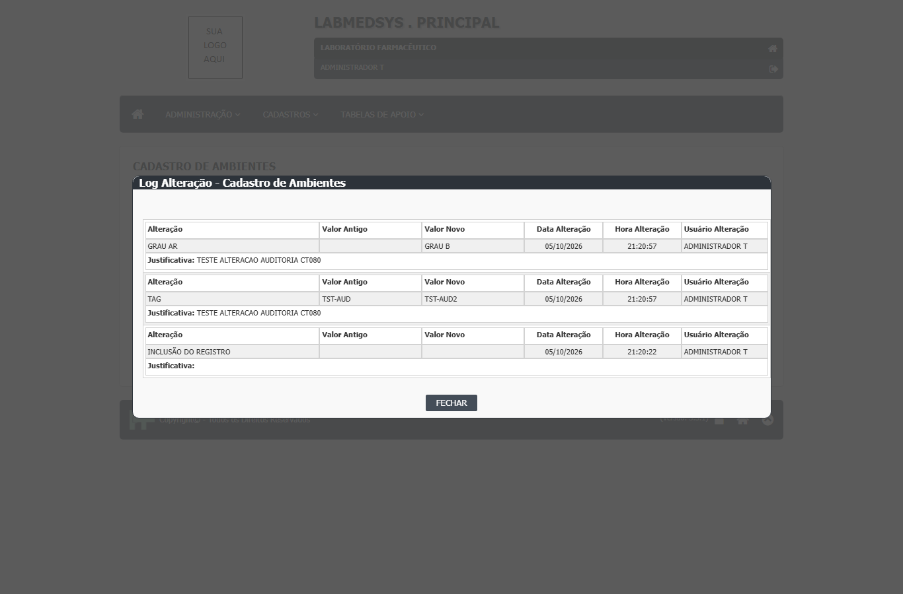
Figura 1: Antes da exclusão: o histórico mostra a inclusão e as alterações de Tag e Grau do Ar com usuário, data, hora e justificativa
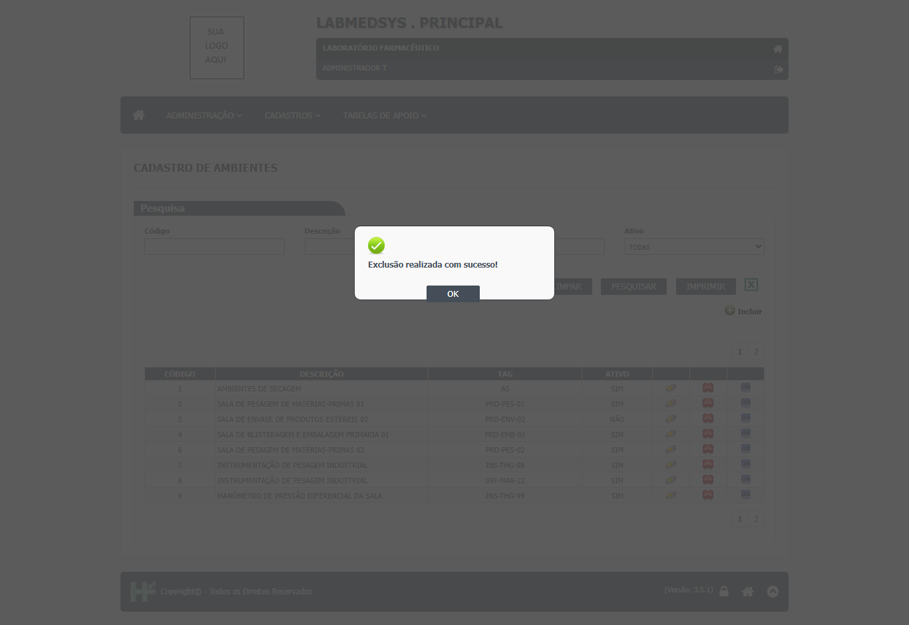
Figura 2: Exclusão confirmada ("Exclusão realizada com sucesso!")
Figura 3: Depois: a pesquisa não encontra o ambiente e não há como abrir o histórico dele
Onde está no código
Causa (confirmada): as consultas das listas trazem só registros com LIXEIRA = 0, e o histórico é aberto pelo comando VerLogAlteracao da linha da lista, com o código do registro. Sem a linha, não há como chamar a consulta. Pelo código, o evento de exclusão é gravado no histórico (item "EXCLUSÃO DO REGISTRO", com usuário, mas sem justificativa: ver DV-PRI-009); falta só a tela para lê-lo. Ponto para validar com o DBA: conferir no banco que o item foi gravado para o ambiente excluído.
| Arquivo | Linhas | O que faz |
|---|---|---|
LaboSys_DAL/dalAmbiente.cs |
19-24 | retornaListaAmbiente: só traz registros fora da lixeira (LIXEIRA = 0). |
LaboSys_DAL/dalEquipamento.cs |
18-20 | retornaListaEquipamento: mesmo filtro. |
LaboSys_UI/administrativas/ambiente_lst.aspx.cs |
174, 462-464 | O histórico só é aberto pelo comando da linha (VerLogAlteracao), pelo código do registro. |
LaboSys_DAL/dalLogAlteracaoAmbiente.cs |
118-129 | O evento de exclusão é gravado no histórico; ninguém o consulta. |
Caminhos a partir da pasta app/ do módulo (1.principal/app).
Sugestão de correção
- Acrescentar no filtro Ativo (ou num filtro próprio) a opção Excluídos, que lista os registros da lixeira só para consulta, com o ícone LOG.
- Ou criar uma tela única de consulta do histórico por cadastro e código, que funcione também para registros excluídos.
- Mostrar no histórico o item "EXCLUSÃO DO REGISTRO" com usuário, data, hora e justificativa (depende do DV-PRI-009).
- Restringir essa consulta a quem tem perfil de auditoria ou de Garantia da Qualidade, a definir com a área. Ponto para validar.
- Aplicar a todos os cadastros que usam exclusão lógica.
Como confirmar a correção
Repetir o CT-PRI-080: incluir, alterar dois campos com justificativa e excluir com justificativa. Conferir que o histórico do registro excluído pode ser aberto e mostra os três eventos (inclusão, alteração e exclusão), cada um com usuário, data, hora e, para alteração e exclusão, a justificativa.
Observações
Defeito ligado ao DV-PRI-009: hoje o evento de exclusão não tem motivo nem consulta.
DV-PRI-022
A troca obrigatória de senha pode ser pulada: digitando o endereço de outra tela, o usuário usa o sistema com a senha provisória
| Gravidade | Situação | Tela | Caso de teste | Encontrado em | Norma afetada |
|---|---|---|---|---|---|
| Alta | Aberto | Principal › Troca de senha (primeiro acesso) e demais telas | CT-PRI-037 | 05/10/2026 (rodada 2) | Guia 33/2020, 9.3.2.3 e 7.3.1 (gestão de senhas e controle de acesso) |
Tipo: acesso/segurança · Já estava no portal: não
O que acontece
Quem entra com uma senha provisória (ou vencida) é levado à tela de troca de senha. Mas a exigência vale só na entrada: sem trocar, o usuário digita o endereço de outra tela (a página inicial ou uma tela que o perfil permite) e ela abre normalmente. Risco: a regra de que a senha provisória, conhecida pelo administrador (DV-PRI-003), precisa ser trocada no primeiro acesso deixa de valer; a validade da senha perde o efeito.
Como reproduzir
- Como administrador, usar o Reset de senha de um usuário de teste e anotar a senha provisória.
- Entrar com esse usuário e a senha provisória: o sistema mostra a tela de troca de senha.
- Sem trocar a senha, digitar na barra do navegador o endereço da página inicial (
inicio.aspx) e, depois, o de uma tela permitida ao perfil (administrativas/centro_custo_lst.aspx).
Dados de teste usados: usuário de teste com perfil que só acessa Centro de custo.
Esperado e obtido
| Esperado | Obtido |
|---|---|
| Enquanto a troca estiver pendente, qualquer tela leva de volta à troca de senha (CT-PRI-037; RF-PRI-007). | A página inicial e a tela permitida ao perfil abrem sem a troca. |
Evidências
Capturas guardadas só na pasta da rodada (não embutidas aqui por mostrarem nomes de usuário ou dados de acesso):
execucao/2026-10-05-rodada-2/evidencias/CT-PRI-037-passo-1.png: Tela de troca de senha exigida na entrada.execucao/2026-10-05-rodada-2/evidencias/CT-PRI-037-passo-2.png: Tela permitida aberta pelo endereço, sem a troca.
Onde está no código
Causa (confirmada): a marcação "troca pendente" é gravada na sessão na tela de entrada e só a tela de troca de senha a consulta; as demais telas não verificam.
| Arquivo | Linhas | O que faz |
|---|---|---|
LaboSys_UI/Default.aspx.cs |
276-279 | Grava Session["resetSenha"] e escolhe a tela de troca como destino. |
LaboSys_UI/trocaSenha.aspx.cs |
51 | Única tela que consulta a marcação. |
Caminhos a partir da pasta app/ do módulo (1.principal/app).
Sugestão de correção
- Verificar a marcação de troca pendente em toda tela (na classe-base das páginas) e redirecionar para a troca.
- Recusar no servidor qualquer chamada de um usuário com troca pendente, não só esconder as telas.
Como confirmar a correção
Repetir o CT-PRI-037: com a troca pendente, nenhum endereço digitado abre outra tela.
Observações
Origem: SEG-PRI-06. Na versão nova, o guarda de rotas das telas já redireciona para a troca (ver 10-comparacao-nova-versao.md); falta o servidor também recusar.
DV-PRI-025
Telas administrativas abrem pelo endereço para quem não tem nenhuma permissão de Administração
| Gravidade | Situação | Tela | Caso de teste | Encontrado em | Norma afetada |
|---|---|---|---|---|---|
| Alta | Aberto | Principal › Administração › Profissional, Cadastro de Perfil, Configuração, Microservices, Grupo de Usuário e relatórios de Usuário e de Perfil (acesso direto) | CT-PRI-061, 063, 065, 066, 067 e 068 | 05/10/2026 (rodada 2) | Guia 33/2020, 9.3.2.3 e 9.7.7.1.2 (controle de acesso e teste de acesso aos recursos) |
Tipo: acesso/segurança · Já estava no portal: não
O que acontece
Um usuário cujo perfil só tem a tela Centro de custo consegue abrir, digitando o endereço, as telas de edição de usuário e de perfil, a de configuração, a de Microservices, a de grupo de usuário e os relatórios de usuário e de perfil (este último mostrando dados). As telas de lista correspondentes são negadas ("Seu perfil não possuí permissão!"). Não foi testado se essas telas gravam. A tela de Microservices (que tem módulo, versão e endereço de cada módulo do sistema) só é recusada para quem não está logado. Risco: a permissão do perfil vale para o menu e para a lista, mas não para a tela de edição; um usuário com acesso mínimo pode ver cadastros de usuários, perfis e a configuração do sistema e, se a gravação não conferir a permissão, alterar acessos.
Como reproduzir
- Entrar no Principal com um usuário de teste cujo perfil só tem a tela Centro de custo.
- Na barra de endereços do navegador, digitar o caminho de cada tela (a partir do endereço do sistema):
administracao/usuario_ed.aspx,administracao/perfil_ed.aspx,administracao/configuracao_ed.aspx,administracao/microservice_ed.aspx,administracao/grupo_usuario_ed.aspx,administracao/usuario_rel.aspxeadministracao/perfil_rel.aspx. - Para comparar, digitar também as listas (
administracao/usuario_lst.aspx,perfil_lst.aspx,usuario_conta_lst.aspx): são negadas. - Sem estar logado, digitar
administracao/microservice_ed.aspx: é negado (sessão expirada).
Dados de teste usados: perfil e usuário de teste com permissão apenas em Centro de custo; nenhum dado gravado.
Esperado e obtido
| Esperado | Obtido |
|---|---|
| Todas as telas de Administração negam o acesso a quem não tem a função, com a mesma mensagem das listas (CT-PRI-061 a 068; RF-PRI-032). | Sete telas de edição, configuração, Microservices e relatórios abriram; as listas foram negadas. |
Evidências
Capturas guardadas só na pasta da rodada (não embutidas aqui por mostrarem nomes de usuário ou dados de acesso):
execucao/2026-10-05-rodada-2/evidencias/CT-PRI-061-passo-1.png: Tela de edição de usuário aberta pelo endereço.execucao/2026-10-05-rodada-2/evidencias/CT-PRI-063-passo-1.png: Tela de edição de perfil aberta pelo endereço.execucao/2026-10-05-rodada-2/evidencias/CT-PRI-066-passo-1.png: Tela de Microservices aberta (valores ocultados).execucao/2026-10-05-rodada-2/evidencias/CT-PRI-068-passo-1.png: Relatório de usuário aberto pelo endereço.
Onde está no código
Causa (confirmada): a classe-base das telas calcula as permissões do usuário mas não impede a entrada; cada tela precisa fazer a própria verificação, e várias (entre elas as de edição e a de Microservices) não fazem. A tela de Microservices nem verifica a sessão no código.
| Arquivo | Linhas | O que faz |
|---|---|---|
LaboSys_Util/ClassePaiEd.cs |
(classe-base das telas de edição) | Calcula as permissões, mas não bloqueia a entrada. |
LaboSys_Util/ClassePaiLst.cs |
(classe-base das listas) | Mesmo comportamento; as listas negam por verificação da própria tela. |
Caminhos a partir da pasta app/ do módulo (1.principal/app).
Sugestão de correção
- Verificar a função do usuário na classe-base de toda tela (edição, configuração e relatórios) e redirecionar para "acesso negado".
- Conferir a permissão no servidor em cada gravação, não só esconder botões.
- Revisar a lista completa de telas em
02-matriz-de-permissoes.md.
Como confirmar a correção
Repetir os CT-PRI-061 a 068 com o usuário de acesso mínimo: todas as telas negam o acesso.
Observações
Origem: SEG-PRI-05. Na versão nova, só parte das telas consulta permissões (ver 10-comparacao-nova-versao.md).
DV-PRI-004
Histórico do Profissional grava a alteração do Cargo sem o valor antigo e o novo, e registra o DDI como alterado sem mudança
| Gravidade | Situação | Tela | Caso de teste | Encontrado em | Norma afetada |
|---|---|---|---|---|---|
| Média | Aberto | Principal › Administração › Profissional (alteração) › Log Alteração | CT-PRI-044 | 05/10/2026 (rodada 1) | RDC 658/2022, art. 125 (toda alteração assinada e datada, com a informação original legível) e art. 124 (atividades rastreáveis) |
Tipo: norma · Já estava no portal: sim
O que acontece
Ao alterar o Cargo de um profissional (com justificativa), o histórico registra o item CARGO com usuário, data, hora e justificativa, mas com Valor Antigo e Valor Novo em branco. Foi digitado ANALISTA TESTE e esse valor não aparece. Na mesma gravação, o histórico também registra o item DDI como alterado (de vazio para 55), sem o usuário ter mexido no campo. Quem audita não sabe o que o cargo passou a ser e vê uma alteração que não aconteceu.
Como reproduzir
- Entrar no módulo Principal e abrir Administração › Profissional; pesquisar
TESTE INCLUSAOe clicar no ícone de editar. - No bloco Setor, em Cargo, digitar
ANALISTA TESTE(deixar Setor em SELECIONE). Alterar também telefone e e-mail. - Em Digite sua Justificativa, escrever
TESTE ALTERACAO CT044e clicar em SALVAR. - Na lista, clicar no ícone LOG da linha e ler as duas páginas do histórico.
Dados de teste usados: profissional TESTE INCLUSAO (Cargo ANALISTA TESTE, justificativa TESTE ALTERACAO CT044).
Esperado e obtido
| Esperado | Obtido |
|---|---|
| Item CARGO com Valor Antigo (vazio) e Valor Novo "ANALISTA TESTE". Nenhum item para campos que o usuário não alterou. | Item CARGO com Valor Antigo e Valor Novo em branco. Item DDI com Valor Antigo vazio e Valor Novo 55, sem alteração feita pelo usuário. |
Evidências
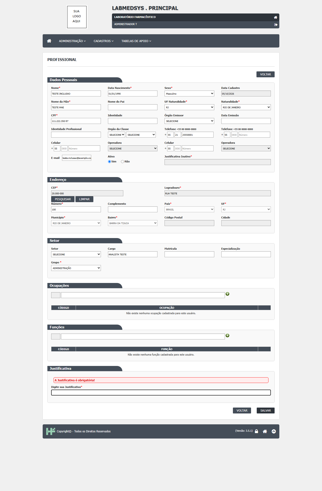
Figura 1: Edição do profissional com Cargo ANALISTA TESTE e Setor em SELECIONE
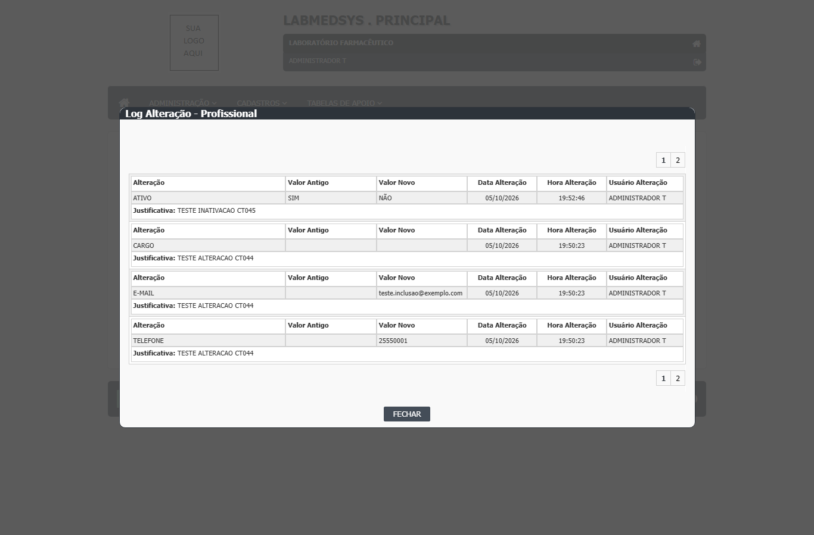
Figura 2: Histórico, página 1: item CARGO com Valor Antigo e Valor Novo em branco
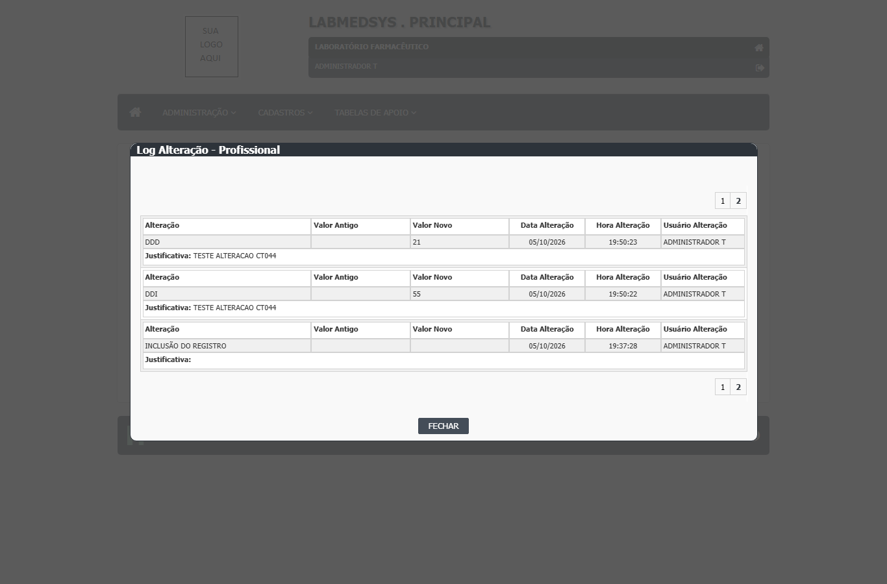
Figura 3: Histórico, página 2: item DDI registrado como alterado (vazio → 55)
Onde está no código
Causa (confirmada): Cargo: a regra detecta corretamente a mudança do Cargo (usuarioNew.Cargo != usuarioOld.Cargo), mas grava como valores o nome da Seção (Secao.NomeLocal), um erro de copiar e colar do bloco anterior. Como o Setor estava em SELECIONE, os dois valores saíram vazios. DDI: a tela preenche o DDI com "55" quando o banco está vazio; ao salvar, o valor antigo (vazio) é comparado com o da tela (55) e a diferença é registrada. A explicação do DDI é provável: falta confirmar com o DBA que o DDI do profissional estava vazio no banco antes da edição.
| Arquivo | Linhas | O que faz |
|---|---|---|
LaboSys_DAL/dalLogAlteracaoUsuario.cs |
491-504 | Log do Cargo: compara o Cargo, mas grava Secao.NomeLocal como valor antigo e novo (linhas 498-499). |
LaboSys_UI/administracao/usuario_ed.aspx.cs |
355, 363 | Na abertura da edição, DDI vazio no banco vira "55" na tela. |
LaboSys_DAL/dalLogAlteracaoUsuario.cs |
220-232 | Log do DDI: registra qualquer diferença entre o banco e a tela, inclusive a criada pelo valor padrão. |
Caminhos a partir da pasta app/ do módulo (1.principal/app).
Sugestão de correção
- No log do Cargo, gravar
usuarioOld.CargoeusuarioNew.Cargocomo valor antigo e novo. - Revisar os outros blocos copiados do mesmo arquivo (Divisão, Seção, Matrícula etc.) para conferir se gravam o campo certo.
- Não aplicar valor padrão de DDI na edição de registro existente, ou gravar o padrão já na inclusão, para que a comparação não acuse mudança falsa.
- Comparar valores normalizados (vazio e nulo iguais; sem espaços) antes de registrar uma alteração.
Como confirmar a correção
Repetir o CT-PRI-044: alterar o Cargo de TESTE INCLUSAO com justificativa e conferir no histórico o item CARGO com o valor antigo e o novo. Conferir que não aparece item de DDI (nem de outro campo) que não foi alterado.
DV-PRI-006
Profissional com conta de usuário e perfil é excluído sem aviso de dependência
| Gravidade | Situação | Tela | Caso de teste | Encontrado em | Norma afetada |
|---|---|---|---|---|---|
| Média | Aberto | Principal › Administração › Profissional › Excluir | CT-PRI-048 | 05/10/2026 (rodada 1) | RDC 658/2022, art. 124 (atividades rastreáveis a quem as executou) e art. 125 (registros legíveis ao longo do tempo) |
Tipo: norma · Já estava no portal: sim
O que acontece
O sistema excluiu o profissional TESTE CADASTRO, que tinha conta de usuário com perfil, sem avisar que havia uma conta ligada a ele. A regra RN-PRI-051 espera que a exclusão seja recusada, dizendo qual dependência impede, ou ao menos que o usuário seja avisado. Os registros criados por um profissional precisam continuar ligados a uma pessoa identificável. O caso de um profissional que já criou registros no sistema não foi reproduzido: esse usuário de teste nunca entrou no sistema.
Como reproduzir
- Entrar no módulo Principal e abrir Administração › Profissional.
- Pesquisar
TESTE CADASTRO(profissional que tem conta em Administração › Conta usuário, com perfil TESTECADASTRO) e clicar no ícone de excluir. - Na tela Exclusão, preencher Justificativa
TESTE EXCLUSAO COM HISTORICO CT048e clicar em EXCLUIR; confirmar. - Pesquisar
TESTE CADASTROde novo.
Dados de teste usados: profissional TESTE CADASTRO com conta e perfil TESTECADASTRO, excluído no CT-PRI-048 e recriado depois para os demais testes.
Esperado e obtido
| Esperado | Obtido |
|---|---|
| Recusar a exclusão, dizendo que há uma conta de usuário e um perfil ligados ao profissional (ou exigir que a conta seja desativada antes), conforme RN-PRI-051. | Exclusão realizada; a pesquisa por TESTE CADASTRO volta "A pesquisa não retornou nenhum resultado." Nenhum aviso sobre a conta. |
Evidências
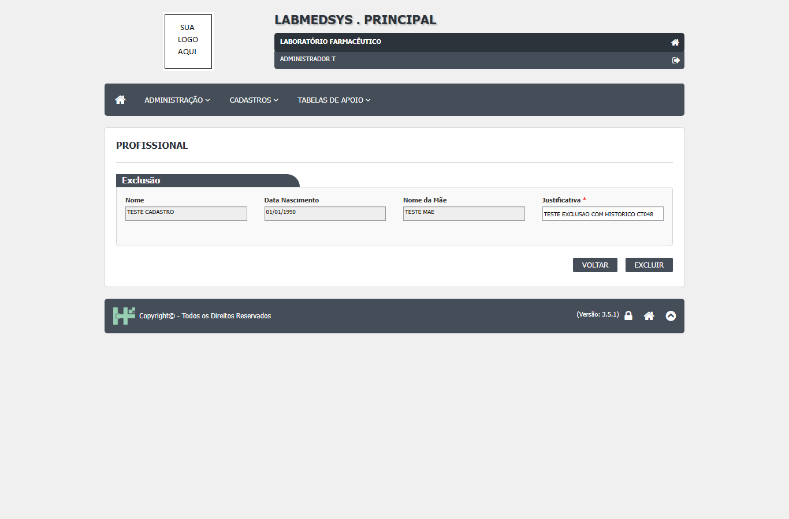
Figura 1: Tela de exclusão do profissional TESTE CADASTRO, com justificativa
Figura 2: Depois de excluir: o profissional não aparece mais, sem aviso sobre a conta
Onde está no código
Causa (confirmada): a exclusão confere dependências pela procedure pPossoExcluir, que só enxerga outras tabelas com chave estrangeira para SIS_USUARIO. A conta (login e validade) fica na mesma linha do profissional em SIS_USUARIO, e a tabela de perfis do usuário (SIS_USUARIO_PERFIL) não tem chave estrangeira para SIS_USUARIO. Assim, nem a conta nem o perfil contam como dependência. Que um profissional que já criou registros seja recusado é provável (os campos de usuário de criação têm chave estrangeira), mas não foi testado.
| Arquivo | Linhas | O que faz |
|---|---|---|
LaboSys_DAL/dalUsuario.cs |
1213-1255 | excluirUsuario: usa PossoExcluir("SIS_USUARIO") e, se livre, marca a lixeira com a justificativa. |
Hsolutions.Principal.DB/Tables/SIS_USUARIO.sql |
3, 9-10 | Login e validade da conta ficam na própria linha do profissional, invisíveis para a conferência de dependências. |
Hsolutions.Principal.DB/Tables/SIS_USUARIO_PERFIL.sql |
1-9 | Perfis do usuário sem chave estrangeira para SIS_USUARIO (só para SIS_PERFIL). |
Caminhos a partir da pasta app/ do módulo (1.principal/app).
Sugestão de correção
- Antes de excluir, conferir explicitamente se o profissional tem conta (login preenchido) ou perfis em
SIS_USUARIO_PERFIL, e recusar com uma mensagem clara: "O profissional possui conta de usuário. Desative a conta antes de excluir." (regra a confirmar com a área). - Acrescentar a chave estrangeira de
SIS_USUARIO_PERFIL.ID_USUARIOparaSIS_USUARIO. - Preferir inativar a excluir quando o profissional já tiver registros no sistema, preservando o vínculo entre registros e autor.
- Usar a mensagem detalhada de dependências proposta no DV-PRI-011.
Como confirmar a correção
Repetir o CT-PRI-048 com um profissional TESTE que tenha conta e perfil: a exclusão deve ser recusada com a dependência informada. Repetir também com um profissional TESTE que já tenha incluído registros (exige entrar no sistema com esse usuário e gravar algo).
Observações
Ponto para validar: com o profissional inativo, o campo de justificativa da exclusão aparece desabilitado (registrado na rodada 1, não analisado no código).
DV-PRI-010
Salvar um equipamento sem Categoria dá erro de servidor e a tela fica parada, sem mensagem
| Gravidade | Situação | Tela | Caso de teste | Encontrado em | Norma afetada |
|---|---|---|---|---|---|
| Média | Aberto | Principal › Cadastros › Cadastro de Equipamentos (inclusão) | CT-PRI-090 (Equipamento) | 05/10/2026 (rodada 1) | — |
Tipo: funcional · Já estava no portal: sim
O que acontece
O campo Categoria não aparece como obrigatório (não tem asterisco nem validação). Se o usuário preenche todos os campos obrigatórios e deixa a Categoria em SELECIONE, ao salvar o servidor devolve o erro "Input string was not in a correct format" e a tela fica parada, sem nenhuma mensagem para o usuário. O equipamento não é gravado. Com uma Categoria escolhida (e mesmo sem fabricante e fornecedor), grava normalmente.
Como reproduzir
- Entrar no módulo Principal e abrir Cadastros › Cadastro de Equipamentos; clicar em Incluir.
- Preencher só os obrigatórios: Tipo de Equipamento Móvel, Ativo Sim, Descrição
TESTE EQUIPAMENTO MIN, TagTST-EQ-MIN, Capacidade de Produção100 COMPRIMIDOS POR HORA, Valor1.500,00. - Deixar Categoria em SELECIONE (e Fabricante e Fornecedor em SELECIONE).
- Clicar em SALVAR e confirmar.
Dados de teste usados: equipamento TESTE EQUIPAMENTO MIN (tag TST-EQ-MIN), não gravado por causa do erro.
Esperado e obtido
| Esperado | Obtido |
|---|---|
| Ou o equipamento é gravado sem categoria, ou a tela recusa com uma mensagem clara (por exemplo, "A Categoria é obrigatória!") e o campo marcado como obrigatório. | Erro de servidor "Input string was not in a correct format"; a tela fica parada, sem mensagem, e o equipamento não é gravado. |
Evidências
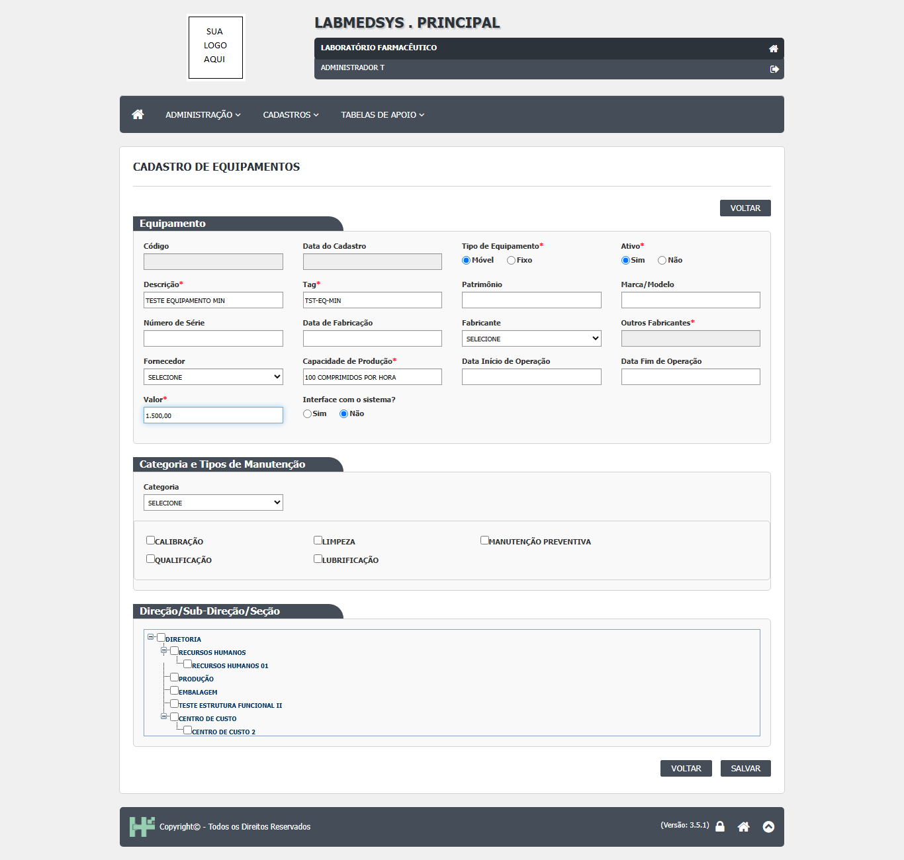
Figura 1: Obrigatórios preenchidos e Categoria em SELECIONE, antes de salvar (o campo não tem asterisco)
Onde está no código
Causa (confirmada): a lista de categorias tem a primeira opção SELECIONE com valor vazio. Ao salvar, o código converte esse valor para número com Convert.ToInt32(ddlCategoria.SelectedValue) sem conferir se está vazio; a conversão de texto vazio lança exatamente "Input string was not in a correct format". Essa linha fica fora do try/catch que trata os erros da inclusão, por isso o erro não vira mensagem na tela. Não há validador para a Categoria na página.
| Arquivo | Linhas | O que faz |
|---|---|---|
LaboSys_UI/administrativas/equipamento_ed.aspx.cs |
76 | CarregaCategorias: insere a opção "SELECIONE" com valor vazio. |
LaboSys_UI/administrativas/equipamento_ed.aspx.cs |
286-287 | salvar(): converte a Categoria para inteiro sem conferir valor vazio, antes e fora do try/catch (que começa na linha 319). |
LaboSys_UI/administrativas/equipamento_ed.aspx |
203-205 | Campo Categoria sem asterisco e sem validador (RequiredFieldValidator). |
Caminhos a partir da pasta app/ do módulo (1.principal/app).
Sugestão de correção
- Decidir com a área se a Categoria é obrigatória. Ponto para validar.
- Se for obrigatória: marcar o campo com asterisco, acrescentar validador no grupo "Equipamento" e conferir também no servidor, com a mensagem "A Categoria é obrigatória!".
- Se não for: tratar o valor vazio como "sem categoria" (nulo) em vez de converter, e gravar o equipamento.
- Trazer a montagem do objeto para dentro do
try/catch, para que qualquer erro apareça como mensagem ao usuário e não deixe a tela parada.
Como confirmar a correção
Repetir o CT-PRI-090 de Equipamento só com os obrigatórios e a Categoria em SELECIONE. Conferir: ou grava (e aparece na lista com histórico de inclusão), ou recusa com mensagem clara. Repetir também com Categoria escolhida, que deve continuar gravando.
Observações
Ponto para validar (só pelo código, não testado): na edição de um equipamento sem categoria, a linha 112 do mesmo arquivo tenta selecionar o valor "0", que não existe na lista (a opção vazia tem valor ""). Vale conferir se abrir para edição um equipamento antigo sem categoria também dá erro. Da mesma forma, ddlCategoria_SelectedIndexChanged (linha 438) converte o valor sem conferir: voltar a Categoria para SELECIONE depois de escolher uma pode dar o mesmo erro.
DV-PRI-011
Exclusão recusada com mensagem genérica, sem dizer qual cadastro ou item impede
| Gravidade | Situação | Tela | Caso de teste | Encontrado em | Norma afetada |
|---|---|---|---|---|---|
| Média | Aberto | Principal › Cadastros › Cadastro de Ambientes (e Cadastro de Equipamentos) › Excluir | CT-PRI-095 (Ambiente) e CT-PRI-094 (Equipamento) | 05/10/2026 (rodada 1; reteste do equipamento na rodada 2) | — |
Tipo: funcional · Já estava no portal: sim
O que acontece
Quando um registro não pode ser excluído porque outro depende dele, o sistema recusa (correto), mas sempre com a mesma frase: "Exclusão inválida, existem referências com outras tabelas." O usuário não sabe o que impede a exclusão. Exemplos: um ambiente usado num Ponto de água; um equipamento recém-criado que tinha o tipo "Manutenção preventiva" marcado na própria tela. No segundo caso, a equipe só descobriu o motivo removendo item por item (o defeito DV-PRI-012 foi aberto por engano por causa disso e depois encerrado).
Como reproduzir
- Entrar no módulo Principal e abrir Cadastros › Cadastro de Ambientes; incluir o ambiente
TESTE AMBIENTE DEPENDENTE. - Abrir Cadastros › Cadastro de Pontos de Água, incluir o ponto
TESTE PONTO AGUA DEPe escolher esse ambiente. - Voltar ao Cadastro de Ambientes, pesquisar
TESTE AMBIENTE DEPENDENTEe clicar no ícone de excluir da linha; confirmar. - Para o equipamento: em Cadastros › Cadastro de Equipamentos, incluir um equipamento com uma Categoria (o tipo de manutenção da categoria vem marcado), salvar e tentar excluir pela lista.
Dados de teste usados: ambiente TESTE AMBIENTE DEPENDENTE (código 18) ligado ao ponto de água TESTE PONTO AGUA DEP; equipamento TESTE EQUIPAMENTO EXCLUIR (código 10, tag TST-EQ-EX, categoria CAT EQUIP), excluído no reteste da rodada 2 depois de desmarcar a manutenção.
Esperado e obtido
| Esperado | Obtido |
|---|---|
| Recusar a exclusão dizendo qual dependência impede, por exemplo "Este ambiente está ligado ao ponto de água TESTE PONTO AGUA DEP" ou "Desmarque os tipos de manutenção do equipamento antes de excluir" (RF-PRI-041, RN-PRI-051 e RN-PRI-071). | "Exclusão inválida, existem referências com outras tabelas." nos dois casos. O registro continua na lista. |
Evidências
Figura 1: Depois da recusa genérica, o ambiente continua na lista; nada diz que o impedimento é o ponto de água
Figura 2: Equipamento recém-criado continua na lista depois da mesma mensagem genérica
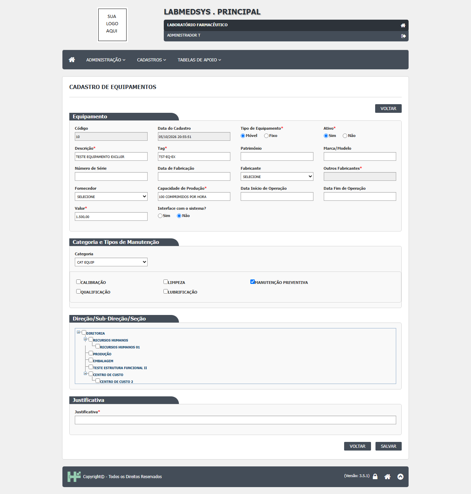
Figura 3: Reteste: o que impedia era o tipo MANUTENÇÃO PREVENTIVA marcado na própria tela do equipamento
Onde está no código
Causa (confirmada): a conferência de dependências é feita pela procedure pPossoExcluir, que percorre todas as tabelas com chave estrangeira para o registro e sabe qual tabela tem dependentes, mas devolve só verdadeiro/falso. O método PossoExcluir do BD.cs repassa só esse booleano, e a regra de negócio monta sempre a mesma mensagem fixa. A mesma frase está copiada em pelo menos 12 classes de regra (bllMoeda, bllPontoAgua, bllUtensilio, bllInstrumento etc.). Que o tipo de manutenção marcado bloqueia o equipamento é provável pela estrutura (tabela TBL_EQUIPAMENTO_TIPO_MANUTENCAO ligada ao equipamento) e foi confirmado no reteste da rodada 2.
| Arquivo | Linhas | O que faz |
|---|---|---|
LaboSys_BLL/bllAmbiente.cs |
168-178 | excluirAmbiente: se possoExcluir for falso, lança a mensagem genérica. |
LaboSys_BLL/bllEquipamento.cs |
178-187 | excluirEquipamento: mesma mensagem genérica. |
LaboSys_DAL/BD.cs |
264-299 | PossoExcluir(tabela, id): chama a procedure e devolve só verdadeiro/falso. |
Hsolutions.Principal.DB/Stored Procedures/pPossoExcluir.sql |
63-91 | Percorre as tabelas dependentes (variável @TABELA_FK), para na primeira com registros e devolve só o bit @RETORNO. |
LaboSys_DAL/dalLocal.cs |
421-450 | Exemplo do próprio sistema que já faz certo: a Estrutura funcional monta a mensagem dizendo o que impede (filhas, usuários, ambientes). |
Caminhos a partir da pasta app/ do módulo (1.principal/app).
Sugestão de correção
- Fazer a procedure devolver a lista de tabelas com dependentes (e quantos registros), não só verdadeiro/falso.
- Traduzir o nome técnico da tabela para o nome do cadastro que o usuário conhece (por exemplo,
TBL_PONTO_AGUA→ "Ponto de água"), numa tabela de tradução única. - Quando o impedimento for um item da própria tela (tipos de manutenção, equipamentos, utilidades e instrumentos do ambiente), orientar: "Remova os itens vinculados nesta tela antes de excluir" (RN-PRI-071).
- Centralizar a mensagem num só lugar, em vez da frase copiada em cada classe de regra, para corrigir todos os cadastros de uma vez.
- Seguir o padrão já usado em
dalLocal.PossoExcluir, que diz o motivo.
Como confirmar a correção
Repetir o CT-PRI-095 de Ambiente (ambiente ligado a ponto de água) e o CT-PRI-094 de Equipamento com um tipo de manutenção marcado. Conferir que a mensagem diz qual cadastro ou item impede e que o registro continua na lista. Depois de remover o dependente, a exclusão deve ser liberada.
Observações
Já registrado como requisito corrigido RF-PRI-041. Ponto para validar: no reteste, o equipamento já tinha "Manutenção preventiva" marcada sem que a equipe a tivesse marcado; pelo código, ao escolher a Categoria a tela marca os tipos de manutenção da categoria (equipamento_ed.aspx.cs, linhas 394-450: checkTipoManutencao e ddlCategoria_SelectedIndexChanged). Isso surpreende o usuário e deveria ser avisado na tela.
DV-PRI-013
Alteração e inativação de Pessoa Jurídica gravam sem pedir justificativa
| Gravidade | Situação | Tela | Caso de teste | Encontrado em | Norma afetada |
|---|---|---|---|---|---|
| Média | Aberto | Principal › Cadastros › Pessoa Jurídica (alteração e inativação) › Log Alteração | CT-PRI-092 e CT-PRI-093 (Pessoa jurídica) | 05/10/2026 (rodada 1) | RDC 658/2022, art. 125 e parágrafo único (alteração assinada e datada; motivo registrado) e art. 124 (atividades rastreáveis) |
Tipo: norma · Já estava no portal: sim
O que acontece
A tela de Pessoa Jurídica não tem campo de justificativa. Alterar dados (Nome Fantasia, Inscrição Estadual) ou mudar Ativo para Não grava direto. O histórico registra o campo, o dado antigo, o dado novo, a data, a hora e o usuário, mas não o motivo. Em Ambiente e Equipamento a alteração exige justificativa; a área decidiu que toda alteração e exclusão de cadastro deve exigir (RN-PRI-070). Pessoa jurídica alimenta fabricantes e fornecedores.
Como reproduzir
- Entrar no módulo Principal e abrir Cadastros › Pessoa Jurídica; pesquisar
TESTE PJe clicar no ícone de editar daTESTE PJ FARMACÊUTICA LTDA. - Alterar Nome Fantasia para
TESTE PJ FANTASIA ALTERADAe Inscrição Estadual para111222333; clicar em SALVAR (não há campo de justificativa). - Na lista, clicar no ícone LOG da linha.
- Editar de novo, marcar Ativo Não e clicar em SALVAR.
Dados de teste usados: pessoa jurídica TESTE PJ FARMACÊUTICA LTDA (código 24), alterada e inativada.
Esperado e obtido
| Esperado | Obtido |
|---|---|
| Pedir justificativa obrigatória na alteração e na inativação ("A Justificativa é obrigatória!" se vazia) e mostrá-la no histórico, como em Ambiente e Equipamento. | Grava sem pedir justificativa. O histórico (colunas Item, Dado Antigo, Dado Novo, Data Alteração, Hora Alteração, Usuário) não mostra justificativa. |
Evidências
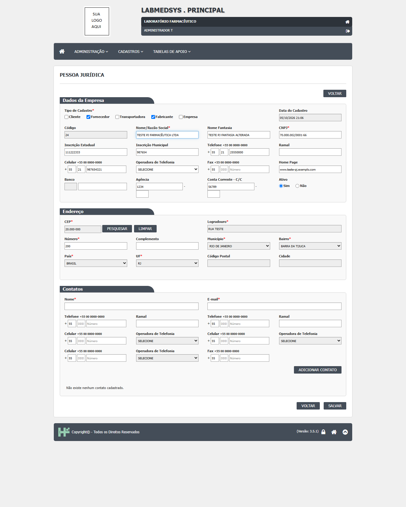
Figura 1: Edição da pessoa jurídica: não existe campo de justificativa na tela
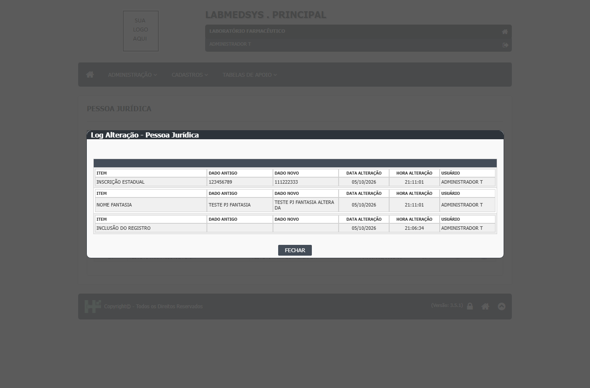
Figura 2: Histórico das alterações sem justificativa
Figura 3: Inativação (Ativo = Não) também sem campo de justificativa
Onde está no código
Causa (confirmada): a justificativa de inativação foi desligada no código (a linha que a lia está comentada e o valor é fixado como vazio) e a tela não tem campo para ela. Na gravação do histórico, todos os itens recebem justificativa = "", fixo, em 32 pontos do mesmo arquivo.
| Arquivo | Linhas | O que faz |
|---|---|---|
LaboSys_UI/administrativas/pessoa_juridica_ed.aspx.cs |
817 | justificativaInativo fixada em ""; a leitura do campo de tela está comentada. |
LaboSys_UI/administrativas/pessoa_juridica_ed.aspx.cs |
239 | Carga da justificativa de inativação comentada. |
LaboSys_DAL/dalLogAlteracaoPJ.cs |
14-32 | gerarLogAlteracaoPJ: cada item do histórico recebe justificativa vazia (padrão repetido no arquivo todo). |
Caminhos a partir da pasta app/ do módulo (1.principal/app).
Sugestão de correção
- Acrescentar à tela um bloco Justificativa obrigatório na alteração (como em Ambiente e Equipamento) e exigi-lo também na inativação.
- Passar a justificativa até
gerarLogAlteracaoPJe gravá-la em cada item do histórico, em vez de"". - Conferir a obrigatoriedade no servidor.
- Mostrar a justificativa no histórico da Pessoa Jurídica e padronizar os cabeçalhos com os dos outros cadastros (Alteração, Valor Antigo, Valor Novo, Data, Hora, Usuário).
Como confirmar a correção
Repetir o CT-PRI-092 e o CT-PRI-093 de Pessoa jurídica com TESTE PJ FARMACÊUTICA LTDA: sem justificativa deve recusar; com justificativa deve gravar, e o histórico deve mostrar cada campo alterado com a justificativa. O mesmo vale para a inativação.
Observações
Pessoa jurídica não tem a função Excluir (só inativação), por isso só a alteração e a inativação estão neste defeito.
DV-PRI-015
As mensagens de login revelam se o usuário existe
| Gravidade | Situação | Tela | Caso de teste | Encontrado em | Norma afetada |
|---|---|---|---|---|---|
| Média | Aberto | Principal › Tela de login | CT-PRI-003 | 05/10/2026 (rodada 2) | Guia 33/2020, 9.3.2.3 (segurança e controle de acesso) |
Tipo: acesso/segurança · Já estava no portal: não
O que acontece
Quando o login digitado não existe, a tela diz "O usuário informado é inválido!". Quando o login existe e a senha está errada, diz "A senha está incorreta, você tem mais N tentativa(s) antes de sua conta ser bloqueada!". Qualquer pessoa pode, portanto, descobrir quais logins são válidos e depois só tentar senhas para eles. Risco: facilita o ataque por tentativa de senha. O bloqueio após 4 erros reduz o risco, mas também permite bloquear de propósito a conta de outra pessoa.
Como reproduzir
- Abrir a tela de login do Principal.
- Digitar um login que não existe, qualquer senha, e clicar em entrar: anotar a mensagem.
- Digitar o login de um usuário de teste que existe, com a senha errada: anotar a mensagem.
Dados de teste usados: um login inexistente e um usuário de teste ativo.
Esperado e obtido
| Esperado | Obtido |
|---|---|
| Mensagem única nos dois casos, por exemplo "Usuário ou senha inválidos" (CT-PRI-003; RN-PRI-002; RF-PRI-003). | Duas mensagens diferentes, uma para usuário inexistente e outra para senha incorreta. |
Evidências
Capturas guardadas só na pasta da rodada (não embutidas aqui por mostrarem nomes de usuário ou dados de acesso):
execucao/2026-10-05-rodada-2/evidencias/CT-PRI-003-passo-1.png: Mensagem para usuário inexistente.execucao/2026-10-05-rodada-2/evidencias/CT-PRI-003-passo-2.png: Mensagem para senha incorreta.
Onde está no código
Causa (confirmada): a regra de login devolve texto diferente para cada situação: usuário não encontrado e senha incorreta.
| Arquivo | Linhas | O que faz |
|---|---|---|
LaboSys_BLL/bllUsuario.cs |
101-108 | Usuário inexistente: grava o acesso e devolve "O usuário informado é inválido!". |
LaboSys_BLL/bllUsuario.cs |
143-152 | Senha incorreta: conta a tentativa e devolve a mensagem com o número de tentativas restantes. |
Caminhos a partir da pasta app/ do módulo (1.principal/app).
Sugestão de correção
- Usar uma mensagem única para usuário inexistente e senha incorreta (por exemplo, "Usuário ou senha inválidos").
- Manter a mensagem específica apenas para conta bloqueada, inativa ou vencida, se a área decidir que essas situações devem ser informadas.
Como confirmar a correção
Repetir o CT-PRI-003: as duas tentativas mostram a mesma mensagem.
Observações
Origem: SEG-PRI-07.
DV-PRI-017
O Reset de senha feito pelo administrador não aparece no histórico da conta
| Gravidade | Situação | Tela | Caso de teste | Encontrado em | Norma afetada |
|---|---|---|---|---|---|
| Média | Aberto | Principal › Administração › Conta do Usuário › Reset de senha e Log Alteração | CT-PRI-010 | 05/10/2026 (rodada 2) | RDC 658/2022, art. 124 (atividades rastreáveis a quem as executou) e art. 125; Guia 33/2020, 9.3.2.3 |
Tipo: norma · Já estava no portal: não
O que acontece
Quando uma conta está bloqueada, o administrador faz o Reset de senha: o usuário volta a entrar e é levado à troca de senha (isso funciona). Mas o histórico da conta (Log Alteração) não mostra o desbloqueio nem o reset: só consta "INCLUSÃO DA CONTA". Risco: não há como provar, numa auditoria, quem desbloqueou ou redefiniu a senha de uma conta, nem quando. É uma ação sensível de acesso sem rastro.
Como reproduzir
- Bloquear um usuário de teste errando a senha quatro vezes na tela de login.
- Entrar como administrador no Principal, abrir Administração › Conta do Usuário, abrir a conta e clicar em Reset de senha; confirmar.
- Entrar com o usuário desbloqueado e trocar a senha.
- Voltar como administrador e abrir o LOG da conta: procurar o registro do reset.
Dados de teste usados: usuário de teste dedicado ao bloqueio.
Esperado e obtido
| Esperado | Obtido |
|---|---|
| O histórico registra o desbloqueio e o reset de senha com usuário que fez, data, hora e motivo (RN-PRI-009; RF-PRI-005). | O usuário é desbloqueado, mas o histórico mostra apenas "INCLUSÃO DA CONTA". |
Evidências
Capturas guardadas só na pasta da rodada (não embutidas aqui por mostrarem nomes de usuário ou dados de acesso):
execucao/2026-10-05-rodada-2/evidencias/CT-PRI-010-passo-2.png: Histórico da conta sem o desbloqueio.
Onde está no código
Causa (confirmada): a rotina de reset gera a senha e chama resetaSenhaUsuario, mas não chama nenhuma rotina de gravação de histórico (na inclusão e na alteração da conta existe uma rotina própria de histórico).
| Arquivo | Linhas | O que faz |
|---|---|---|
LaboSys_UI/administracao/usuario_conta_ed.aspx.cs |
460-481 | resetarSenha(): não grava item de histórico. |
LaboSys_DAL/dalLogAlteracaoUsuarioConta.cs |
(arquivo todo) | Rotina de histórico da conta: trata alteração de campos, perfil e validades, mas não o reset de senha. |
Caminhos a partir da pasta app/ do módulo (1.principal/app).
Sugestão de correção
- Gravar no histórico da conta os itens "RESET DE SENHA" e "DESBLOQUEIO", com usuário, data, hora e justificativa.
- Exigir justificativa no Reset de senha (RN-PRI-070).
Como confirmar a correção
Repetir o CT-PRI-010: depois do reset, o LOG da conta mostra o reset e o desbloqueio com quem e quando.
Observações
Relacionado a SEG-PRI-22. O registro de acessos (SIS_ACESSO) não tem tela; a conferência com o DBA continua pendente (SEG-PRI-14).
DV-PRI-019
O token de acesso vai no endereço da página: quem copia o endereço entra sem senha em outro navegador
| Gravidade | Situação | Tela | Caso de teste | Encontrado em | Norma afetada |
|---|---|---|---|---|---|
| Média | Aberto | Principal › Tela inicial (lista de módulos) › link de cada módulo | CT-PRI-023 | 05/10/2026 (rodada 2) | Guia 33/2020, 9.3.2.3 (segurança e controle de acesso); 9.8.1.3.8 (controles de segurança lógicos) |
Tipo: acesso/segurança · Já estava no portal: não
O que acontece
O link de cada módulo na tela inicial leva um token no endereço (?token=...), visível no código da página. Abrindo esse endereço em outro navegador, sem login e sem cookies, o sistema entrou como o usuário que o gerou. No módulo Produção, onde esse usuário não tem permissão, o token também foi reconhecido (e o sistema respondeu "Seu perfil não possuí permissão!"). O token deixa de valer depois do Sair. Risco: o endereço fica no histórico do navegador, nos registros do servidor e em e-mails ou conversas onde alguém o cole; quem o obtém, enquanto a sessão está aberta, entra como o usuário sem saber a senha.
Como reproduzir
- Entrar no Principal com um usuário de teste e, na tela inicial, copiar o endereço do link de um módulo (o endereço traz
?token=). - Abrir uma janela de outro navegador, sem cookies, e colar o endereço.
- Observar que a tela inicial do usuário abre sem pedir senha.
- Clicar em Sair na primeira sessão e repetir: o endereço deixa de valer.
Dados de teste usados: usuário de teste com perfil de cadastro; nenhum dado criado.
Esperado e obtido
| Esperado | Obtido |
|---|---|
| O token não aparece no endereço (vai em cabeçalho ou cookie protegido) e, se aparecer, só vale uma vez e para o mesmo navegador (CT-PRI-023; SEG-PRI-08). | O token vai no endereço e dá acesso em outro navegador enquanto a sessão estiver aberta; deixa de valer depois do Sair. |
Evidências
Capturas guardadas só na pasta da rodada (não embutidas aqui por mostrarem nomes de usuário ou dados de acesso):
execucao/2026-10-05-rodada-2/evidencias/CT-PRI-023-passo-1.png: Acesso em outro navegador pelo endereço com o token (valores ocultados).
Onde está no código
Causa (confirmada): a tela de entrada do módulo lê o token da cadeia de consulta do endereço, valida e abre a sessão; a passagem entre módulos usa esse mesmo mecanismo.
| Arquivo | Linhas | O que faz |
|---|---|---|
LaboSys_UI/Default.aspx.cs |
27-46 | Lê token do endereço (QueryString), valida e carrega o usuário. |
LaboSys_UI/Default.aspx.cs |
291 | Monta o link do módulo com o token. |
Caminhos a partir da pasta app/ do módulo (1.principal/app).
Sugestão de correção
- Passar a autenticação entre módulos fora do endereço (cabeçalho, cookie protegido ou troca única de código por sessão).
- Se o token ficar no endereço, torná-lo de uso único, com validade de poucos segundos e preso ao navegador de origem.
- Descobrir por quanto tempo o token vale (ponto a confirmar com o desenvolvimento).
Como confirmar a correção
Repetir o CT-PRI-023: o endereço copiado não dá acesso em outro navegador.
Observações
Origem: SEG-PRI-08. A versão nova usa o token em cabeçalho (ver 10-comparacao-nova-versao.md).
DV-PRI-020
Clicar em Sair no Principal não encerra a sessão dos outros módulos
| Gravidade | Situação | Tela | Caso de teste | Encontrado em | Norma afetada |
|---|---|---|---|---|---|
| Média | Aberto | Principal › Sair (e módulos abertos em outras abas) | CT-PRI-022 | 05/10/2026 (rodada 2) | Guia 33/2020, 9.3.2.3 (segurança e controle de acesso) |
Tipo: acesso/segurança · Já estava no portal: não
O que acontece
Depois de entrar no Principal e abrir outro módulo (Produção), o usuário clicou em Sair no Principal e voltou à tela de login. O módulo Produção continuou logado com o mesmo usuário: cada módulo guarda a própria sessão e o Sair do Principal não a encerra. Risco: em computador compartilhado, a pessoa seguinte usa a sessão do módulo aberto sem senha, com as permissões do usuário anterior, e as ações ficam atribuídas a ele. O botão Voltar do navegador mostrou a tela do Principal, mas só como cópia guardada: ao recarregar, o sistema pediu login.
Como reproduzir
- Entrar no Principal com um usuário de teste e, pela tela inicial, abrir o módulo Produção em outra aba.
- Voltar à aba do Principal e clicar em Sair.
- Na aba do Produção, recarregar a página ou clicar em uma tela.
Dados de teste usados: usuário de teste com perfil de cadastro; nenhum dado criado.
Esperado e obtido
| Esperado | Obtido |
|---|---|
| A sessão termina nos dois módulos (CT-PRI-022; RF-PRI-006). | O Produção continua logado com o mesmo usuário depois do Sair no Principal. |
Evidências
Capturas guardadas só na pasta da rodada (não embutidas aqui por mostrarem nomes de usuário ou dados de acesso):
execucao/2026-10-05-rodada-2/evidencias/CT-PRI-022-passo-4.png: Módulo Produção ainda logado depois do Sair no Principal.
Onde está no código
Causa (provável): o Sair do Principal apaga só a sessão do próprio módulo (Session.Abandon) e invalida o token; a sessão de cada outro módulo é independente e não é avisada. Inferência pelo comportamento visto; falta conferir a rotina de Sair da biblioteca compartilhada.
| Arquivo | Linhas | O que faz |
|---|---|---|
LaboSys_UI/trocaSenha.aspx.cs |
51-58 | Exemplo do encerramento por Session.Abandon(), que vale só para o módulo atual. |
Caminhos a partir da pasta app/ do módulo (1.principal/app).
Sugestão de correção
- Fazer o Sair do Principal invalidar a sessão em todos os módulos (por exemplo, módulos consultam o Principal a cada requisição ou recebem aviso de logout).
- Definir um tempo máximo de sessão igual em todos os módulos.
Como confirmar a correção
Repetir o CT-PRI-022: depois do Sair, o Produção e os demais módulos pedem login.
Observações
Origem: nova no teste (SEG-PRI-19). Na versão nova, a tendência é desaparecer quando os módulos forem migrados para uma só aplicação.
DV-PRI-023
Quem só tem a consulta de Usuário vê a tela de detalhe destravada: 38 de 51 campos editáveis
| Gravidade | Situação | Tela | Caso de teste | Encontrado em | Norma afetada |
|---|---|---|---|---|---|
| Média | Aberto | Principal › Administração › Profissional (detalhe do usuário) | CT-PRI-050 | 05/10/2026 (rodada 2) | Guia 33/2020, 9.3.2.3 e 9.7.7.1.2 (controle de acesso e teste de acesso aos recursos) |
Tipo: acesso/segurança · Já estava no portal: não
O que acontece
Um usuário cujo perfil só tem a consulta de Profissional vê, na lista, apenas o ícone "Consultar" (sem Novo, Editar ou Excluir). Mas ao abrir o detalhe de um usuário, 38 dos 51 campos continuam editáveis e aparecem os botões Adicionar Ocupação e Adicionar Função; só o botão Salvar some. Risco: a tela dá a impressão de que o usuário pode alterar dados que não pode, e abre caminho para erro ou tentativa de burla. O envio forçado da gravação foi recusado pelo servidor (CT-PRI-070), mas pela validação técnica do ASP.NET e não por uma checagem de permissão.
Como reproduzir
- Entrar com um usuário de teste cujo perfil só tem as telas Perfil e Profissional, sem nenhuma ação.
- Abrir Administração › Profissional, pesquisar e clicar no ícone Consultar de um registro.
- Tentar digitar em campos como Cargo e e-mail e conferir os botões da tela.
Dados de teste usados: usuário de teste com perfil de consulta; nenhum dado alterado.
Esperado e obtido
| Esperado | Obtido |
|---|---|
| Tela somente leitura: campos desabilitados e sem botões de adicionar ou salvar (CT-PRI-050; RN-PRI-043). | 38 de 51 campos editáveis e botões "Adicionar Ocupação" e "Adicionar Função" visíveis; só o Salvar não existe. |
Evidências
Capturas guardadas só na pasta da rodada (não embutidas aqui por mostrarem nomes de usuário ou dados de acesso):
execucao/2026-10-05-rodada-2/evidencias/CT-PRI-050-passo-3.png: Detalhe do usuário no modo consulta com campos editáveis.
Onde está no código
Causa (provável): no modo consulta a tela só esconde o botão Salvar; não desabilita os campos nem os botões de adicionar. Inferência pelo comportamento visto e pela leitura de usuario_ed.aspx.cs, que só trata a justificativa e a obrigatoriedade de campos.
| Arquivo | Linhas | O que faz |
|---|---|---|
LaboSys_UI/administracao/usuario_ed.aspx.cs |
(carga da tela) | Não há travamento geral dos campos no modo consulta; só o botão Salvar é escondido. |
Caminhos a partir da pasta app/ do módulo (1.principal/app).
Sugestão de correção
- No modo consulta, desabilitar todos os campos e ocultar os botões de adicionar, salvar e excluir.
- Conferir a permissão também no servidor, em cada gravação (relacionado a DV-PRI-025).
Como confirmar a correção
Repetir o CT-PRI-050 e o CT-PRI-070: a tela abre somente leitura e o servidor recusa a gravação por falta de permissão.
Observações
Relacionado a SEG-PRI-20. Na versão nova, o perfil em modo consulta já desabilita o formulário (Perfis); Profissional ainda não foi migrado.
DV-PRI-024
A alteração das permissões de um perfil não pede justificativa e o histórico não a guarda
| Gravidade | Situação | Tela | Caso de teste | Encontrado em | Norma afetada |
|---|---|---|---|---|---|
| Média | Aberto | Principal › Administração › Cadastro de Perfil (alteração) › Log Alteração | CT-PRI-053 | 05/10/2026 (rodada 2) | RDC 658/2022, art. 125 e parágrafo único (alteração assinada e datada; motivo registrado) e art. 124 (atividades rastreáveis) |
Tipo: norma · Já estava no portal: não
O que acontece
Retirar ou acrescentar funções de um perfil é uma mudança de acesso de várias pessoas de uma vez. O sistema registra no histórico do perfil o fato (por exemplo, "PERMISSÃO EXCLUÍDA — PROFISSIONAL / INCLUIR"), com usuário, data e hora, mas não pede o motivo e o histórico do perfil não tem coluna de justificativa. A área decidiu em 06/10/2026 que toda alteração e exclusão de cadastro exige justificativa (RN-PRI-070). Risco: numa auditoria de acessos não há como saber por que um perfil ganhou ou perdeu uma permissão.
Como reproduzir
- Entrar no Principal como administrador e abrir Administração › Perfil.
- Abrir um perfil de teste com a função Incluir de Profissional marcada e desmarcá-la; SALVAR: não aparece campo de justificativa.
- Na lista, clicar no ícone LOG do perfil e ler o registro.
Dados de teste usados: perfil de teste com a função Incluir de Profissional, retirada.
Esperado e obtido
| Esperado | Obtido |
|---|---|
| A alteração de permissões exige justificativa ("A justificativa é obrigatória!" se vazia) e o histórico do perfil mostra o motivo junto com usuário, data e hora (CT-PRI-053; RN-PRI-070; RF-PRI-036). | Grava sem justificativa; o histórico registra o que mudou, quem e quando, mas não o motivo. |
Evidências
Capturas guardadas só na pasta da rodada (não embutidas aqui por mostrarem nomes de usuário ou dados de acesso):
execucao/2026-10-05-rodada-2/evidencias/CT-PRI-053-passo-1.png: Alteração do perfil sem campo de justificativa.execucao/2026-10-05-rodada-2/evidencias/CT-PRI-053-passo-3.png: Histórico do perfil sem justificativa.
Onde está no código
Causa (confirmada): a tela de edição de perfil não tem campo de justificativa nem o carrega para a regra de gravação; o histórico do perfil não tem coluna de justificativa.
| Arquivo | Linhas | O que faz |
|---|---|---|
LaboSys_UI/administracao/perfil_ed.aspx.cs |
(gravação do perfil) | Não lê nem repassa justificativa (nenhuma referência a justificativa no arquivo). |
Caminhos a partir da pasta app/ do módulo (1.principal/app).
Sugestão de correção
- Acrescentar o campo Justificativa, obrigatório, na alteração do perfil e gravá-lo em cada item do histórico.
- Conferir a obrigatoriedade no servidor.
- Aplicar a mesma regra a todos os cadastros (RN-PRI-070).
Como confirmar a correção
Repetir o CT-PRI-053: sem justificativa, a alteração é recusada; com ela, o histórico mostra o motivo.
Observações
Relacionado a SEG-PRI-21 e aos defeitos DV-PRI-009 e DV-PRI-013 (mesma regra, em outros cadastros).
DV-PRI-026
Um envio inválido mostra a página de erro técnica do ASP.NET, com o rastro de chamadas e a versão do .NET
| Gravidade | Situação | Tela | Caso de teste | Encontrado em | Norma afetada |
|---|---|---|---|---|---|
| Média | Aberto | Principal › qualquer tela (envio de formulário inválido) | CT-PRI-070 e CT-PRI-071 | 05/10/2026 (rodada 2) | Guia 33/2020, 9.3.2.3 (mensagens de erro; não expor detalhes técnicos); 9.8.1.3.8 (controles de segurança lógicos) |
Tipo: acesso/segurança · Já estava no portal: não
O que acontece
Quando o servidor recusa um envio forçado (um formulário reenviado como se um botão sem permissão tivesse sido clicado), o usuário vê a página de erro amarela do ASP.NET, com o texto da exceção, o rastro de chamadas (nomes de arquivos e rotinas internas) e a versão do .NET. Não existe página de erro amigável. Risco: quem não deveria conhecer a estrutura interna do sistema a vê, o que facilita um ataque. O lado bom: a recusa funcionou e nada foi alterado ou excluído.
Como reproduzir
- Entrar com um usuário de teste sem a função de excluir e abrir Cadastros › Cadastro de Ambientes: o ícone de excluir não aparece.
- Com a ferramenta de desenvolvedor do navegador (F12), reenviar o formulário como se o clique em Excluir tivesse ocorrido.
- Observar a página de erro técnica do servidor; conferir que nada foi excluído.
Dados de teste usados: usuário de teste com perfil de cadastro (sem Excluir) e um ambiente de teste; nada foi alterado.
Esperado e obtido
| Esperado | Obtido |
|---|---|
| Uma página de erro genérica, sem detalhes técnicos, e o detalhe guardado só no registro de erros do servidor. | Página de erro técnica do ASP.NET com a exceção, o rastro de chamadas e a versão do .NET. |
Evidências
Capturas guardadas só na pasta da rodada (não embutidas aqui por mostrarem nomes de usuário ou dados de acesso):
execucao/2026-10-05-rodada-2/evidencias/CT-PRI-070-passo-2.png: Página de erro técnica depois do envio forçado.execucao/2026-10-05-rodada-2/evidencias/CT-PRI-071-passo-3.png: Idem, no envio forçado do Excluir.
Onde está no código
Causa (confirmada): o sistema está configurado em modo de depuração (compilation debug="true") e não define página de erro própria; por isso o erro é mostrado com todos os detalhes.
| Arquivo | Linhas | O que faz |
|---|---|---|
LaboSys_UI/web.config |
75 | compilation debug="true" na configuração da interface. |
Caminhos a partir da pasta app/ do módulo (1.principal/app).
Sugestão de correção
- Desligar o modo de depuração na publicação (pela transformação
web.Release.config). - Configurar uma página de erro genérica (
customErrors) e guardar o detalhe só no registro do servidor.
Como confirmar a correção
Repetir os CT-PRI-070 e CT-PRI-071: o envio forçado é recusado com uma página genérica, sem detalhes técnicos.
Observações
Origem: SEG-PRI-10. Segue valendo o CT-PRI-103. Na versão nova, os erros aparecem como avisos com a mensagem enviada pelo servidor.
DV-PRI-001
O nome do perfil não aceita o caractere "_" e o sistema o apaga sem avisar
| Gravidade | Situação | Tela | Caso de teste | Encontrado em | Norma afetada |
|---|---|---|---|---|---|
| Baixa | Aberto | Principal › Administração › Cadastro de Perfil (inclusão) | Preparação dos perfis de teste (seção 3.1 do plano); afeta também o CT-PRI-101 (apóstrofo) | 05/10/2026 (rodada 1) | Usabilidade; RF-PRI-075 (definir e informar os caracteres permitidos, sem removê-los em silêncio) |
Tipo: funcional · Já estava no portal: não
O que acontece
No campo Nome do perfil, o sistema descarta alguns caracteres sem dizer nada ao usuário: o sublinhado _, o hífen -, a barra / e o apóstrofo '. Ao digitar TESTE_ADMIN, o perfil é gravado como TESTEADMIN; o mesmo acontece quando o texto é colado. O usuário só percebe depois de salvar, ao ver o nome diferente na lista. Risco: perfis de acesso com nomes diferentes dos combinados com a área (por exemplo, dois perfis que acabam com o mesmo nome) e confusão na revisão de acessos. O plano de testes previa nomes com _.
Como reproduzir
- Entrar no módulo Principal e abrir Administração › Perfil; clicar em Novo.
- Em Nome do perfil, digitar
TESTE_ADMIN(ou colar o texto). - Marcar ao menos uma função e clicar em SALVAR.
- Voltar à lista de perfis e pesquisar
TESTE: o perfil aparece comoTESTEADMIN.
Dados de teste usados: perfis de teste TESTEADMIN, TESTECONSULTA, TESTECADASTRO e TESTESEMADMIN (gravados sem o sublinhado).
Esperado e obtido
| Esperado | Obtido |
|---|---|
| Aceitar os caracteres normais de um nome (sublinhado, hífen, apóstrofo e barra) ou, se algum não for permitido, avisar quais são permitidos e recusar com mensagem, sem alterar o que o usuário digitou. | O caractere é removido em silêncio; o nome gravado é diferente do digitado. |
Evidências
Capturas guardadas só na pasta da rodada (não embutidas aqui por mostrarem nomes de usuário ou dados de acesso):
execucao/2026-10-05/evidencias/PREP-lista-perfis-TESTE.png: Lista de perfis com os nomes gravados sem o sublinhado.
Onde está no código
Causa (confirmada): o campo do nome do perfil tem um filtro de caracteres no navegador que só deixa passar letras, números, espaço e ponto; todo o resto é descartado ao digitar ou colar, sem mensagem. O campo do login da conta tem filtro parecido (letras, números, espaço e ponto) e a gravação do login converte tudo para maiúsculas.
| Arquivo | Linhas | O que faz |
|---|---|---|
LaboSys_UI/administracao/perfil_ed.aspx |
161-162 | Campo do nome do perfil com FilteredTextBoxExtender e lista fixa de caracteres válidos (sem _, -, / nem '). |
LaboSys_UI/administracao/usuario_conta_ed.aspx |
127-128 | Campo do login com filtro parecido (letras, números, espaço e ponto). |
Caminhos a partir da pasta app/ do módulo (1.principal/app).
Sugestão de correção
- Definir com a área quais caracteres são permitidos em nomes de perfil e em logins (ponto para validar).
- Mostrar a lista de caracteres permitidos junto ao campo e, quando o usuário digitar um não permitido, avisar em vez de apagar em silêncio.
- Conferir a regra também no servidor, não só no navegador.
Como confirmar a correção
Repetir a preparação dos perfis (seção 3.1 do plano) com nomes contendo _, -, / e ': ou gravam como digitado, ou a tela avisa o que não é permitido.
DV-PRI-002
O login da conta é gravado sempre em maiúsculas, sem regra definida
| Gravidade | Situação | Tela | Caso de teste | Encontrado em | Norma afetada |
|---|---|---|---|---|---|
| Baixa | Aberto | Principal › Administração › Conta do Usuário (inclusão) | Preparação dos usuários de teste (seção 3.2 do plano) | 05/10/2026 (rodada 1) | Usabilidade; RF-PRI-075 (definir e informar os caracteres permitidos em logins) |
Tipo: funcional · Já estava no portal: não
O que acontece
Ao criar a conta de um usuário, o login digitado em minúsculas é gravado em maiúsculas. Não há aviso nem regra escrita dizendo se o login diferencia maiúsculas de minúsculas. Risco: baixo, mas gera dúvida de quem entra (digitar minúsculas funciona?) e deixa os documentos de acesso e o plano de testes com grafia diferente da gravada.
Como reproduzir
- Entrar no módulo Principal com um usuário administrador e abrir Administração › Profissional.
- Criar o profissional e abrir a aba Conta; em Login, digitar o login em minúsculas.
- Preencher perfil e validade e SALVAR.
- Abrir Administração › Conta do Usuário e pesquisar a conta: o login aparece em maiúsculas.
Dados de teste usados: contas de usuário de teste (dez), todas gravadas com o login em maiúsculas.
Esperado e obtido
| Esperado | Obtido |
|---|---|
| Regra definida e informada: ou o login é gravado como digitado, ou a tela avisa que será convertido para maiúsculas e a entrada aceita qualquer caixa. | O login digitado em minúsculas é gravado em maiúsculas, sem aviso. |
Evidências
Capturas guardadas só na pasta da rodada (não embutidas aqui por mostrarem nomes de usuário ou dados de acesso):
execucao/2026-10-05/evidencias/PREP-lista-profissionais-TESTE.png: Lista de profissionais e contas de teste criados na rodada 1.
Onde está no código
Causa (confirmada): na gravação da conta, o login é convertido para maiúsculas e tem os espaços retirados antes de ir ao banco.
| Arquivo | Linhas | O que faz |
|---|---|---|
LaboSys_UI/administracao/usuario_conta_ed.aspx.cs |
386 | usuarioConta.Login recebe o texto digitado com Trim, retirada de espaços e ToUpper. |
Caminhos a partir da pasta app/ do módulo (1.principal/app).
Sugestão de correção
- Decidir com a área se o login diferencia maiúsculas de minúsculas e registrar a decisão como regra de negócio (ponto para validar).
- Avisar na tela a regra escolhida (por exemplo, "O login será gravado em maiúsculas").
Como confirmar a correção
Criar uma conta com login em minúsculas e conferir que o comportamento segue a regra decidida e que a tela a informa; entrar com o login em caixa diferente da gravada.
DV-PRI-005
O histórico da conta ganha a linha "VALIDADE INÍCIO" a cada gravação, sem que a data tenha mudado
| Gravidade | Situação | Tela | Caso de teste | Encontrado em | Norma afetada |
|---|---|---|---|---|---|
| Baixa | Aberto | Principal › Administração › Conta do Usuário › Log Alteração | CT-PRI-046 (perfil da conta) | 05/10/2026 (rodada 1) | RDC 658/2022, art. 125 (registro legível); ruído na trilha de auditoria |
Tipo: funcional · Já estava no portal: não
O que acontece
Cada vez que a conta é salva, o histórico (Log Alteração) acrescenta um item "VALIDADE INÍCIO" em que o valor antigo e o novo são a mesma data, mesmo sem ninguém ter mexido na validade. Risco: baixo, mas o histórico fica poluído com registros que não são alterações, o que dificulta a leitura em uma auditoria e pode levar o auditor a achar que a validade foi mexida.
Como reproduzir
- Entrar no módulo Principal e abrir Administração › Conta do Usuário; abrir a conta de um usuário de teste.
- Adicionar um segundo perfil (ou remover um), informar a justificativa e SALVAR, sem mexer na validade.
- Na lista, clicar no ícone LOG da conta e ler os itens do histórico.
Dados de teste usados: conta de usuário de teste com o perfil TESTECONSULTA incluído e excluído.
Esperado e obtido
| Esperado | Obtido |
|---|---|
| O histórico registra só os campos efetivamente alterados ("NOVO PERFIL", "PERFIL EXCLUÍDO"), sem linhas de campos que ficaram iguais (RF-PRI-078). | Junto com "NOVO PERFIL" e "PERFIL EXCLUÍDO" aparece "VALIDADE INÍCIO 05/10/2026 → 05/10/2026" a cada gravação. |
Evidências
Capturas guardadas só na pasta da rodada (não embutidas aqui por mostrarem nomes de usuário ou dados de acesso):
execucao/2026-10-05/evidencias/CT-PRI-046-passo-1.png: Histórico da conta com a linha VALIDADE INÍCIO sem mudança.
Onde está no código
Causa (provável): a gravação do histórico compara a validade inicial nova com a antiga com o operador de diferença; como os dois valores chegam em formatos de texto diferentes, a comparação sempre acha que mudou e grava o item, com a mesma data nos dois lados. Inferência a confirmar na correção.
| Arquivo | Linhas | O que faz |
|---|---|---|
LaboSys_DAL/dalLogAlteracaoUsuarioConta.cs |
66-80 | Compara ValidadeInicial nova e antiga e grava o item VALIDADE INÍCIO. |
Caminhos a partir da pasta app/ do módulo (1.principal/app).
Sugestão de correção
- Comparar as datas já convertidas para data (e não como texto) antes de gravar o item.
- Gravar no histórico só os campos que mudaram (RF-PRI-078).
Como confirmar a correção
Repetir o CT-PRI-046: ao incluir e excluir um perfil, o histórico mostra só "NOVO PERFIL" e "PERFIL EXCLUÍDO".
DV-PRI-007
Cadastro de Ambientes aceita duas descrições iguais
| Gravidade | Situação | Tela | Caso de teste | Encontrado em | Norma afetada |
|---|---|---|---|---|---|
| Baixa | Aberto | Principal › Cadastros › Cadastro de Ambientes (inclusão) | CT-PRI-091 (Ambiente) | 05/10/2026 (rodada 1) | — |
Tipo: funcional · Já estava no portal: sim
O que acontece
O sistema gravou dois ambientes com a mesma descrição, TESTE AMBIENTE LABORATÓRIO (códigos 14 e 15). A Tag é conferida contra repetição, mas a Descrição não. Nas listas de escolha dos outros cadastros (Ponto de água, por exemplo) os dois aparecem com o mesmo nome e o usuário não sabe qual escolher. A regra (pode ou não repetir) ainda precisa ser definida pela área.
Como reproduzir
- Entrar no módulo Principal e abrir Cadastros › Cadastro de Ambientes; clicar em Incluir.
- Em Descrição, digitar
TESTE AMBIENTE LABORATÓRIO, deixar Ativo Sim e clicar em SALVAR. - Clicar em Incluir de novo, digitar a mesma Descrição e clicar em SALVAR.
- Pesquisar
TESTE AMBIENTEe clicar em IMPRIMIR.
Dados de teste usados: ambientes TESTE AMBIENTE LABORATÓRIO códigos 14 e 15.
Esperado e obtido
| Esperado | Obtido |
|---|---|
| Recusar a segunda inclusão com uma mensagem como "Descrição já cadastrada!" (a regra precisa ser confirmada pela área; ver observações). | "Inclusão realizada com sucesso!" nas duas vezes; a lista e o relatório mostram dois ambientes com a mesma descrição. |
Evidências
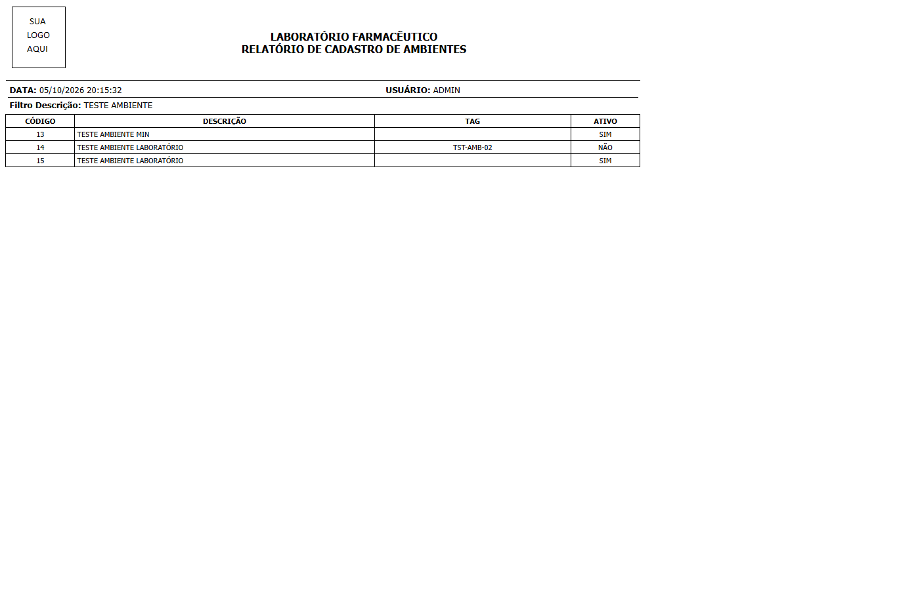
Figura 1: Relatório com os códigos 14 e 15, ambos TESTE AMBIENTE LABORATÓRIO
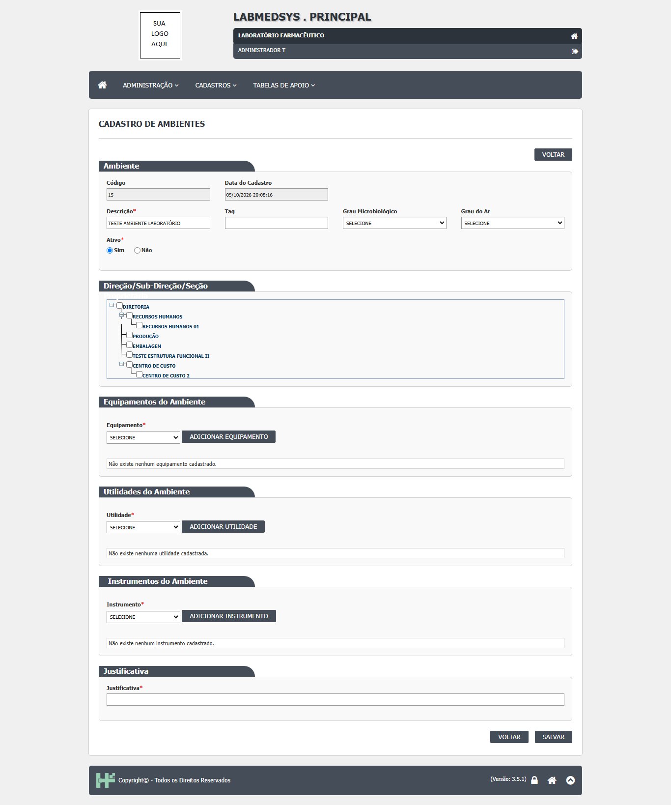
Figura 2: O segundo ambiente (código 15) gravado com a mesma descrição
Onde está no código
Causa (confirmada): na inclusão, a regra só confere se a Tag já existe (validaTag); não há conferência da Descrição. A tabela TBL_AMBIENTE também não tem índice único na coluna DESCRICAO.
| Arquivo | Linhas | O que faz |
|---|---|---|
LaboSys_BLL/bllAmbiente.cs |
104-118 | incluirAmbiente: confere só a Tag ("Tag já existe!") e grava. |
Hsolutions.Principal.DB/Tables/TBL_AMBIENTE.sql |
1-23 | DESCRICAO sem restrição de unicidade. |
Caminhos a partir da pasta app/ do módulo (1.principal/app).
Sugestão de correção
- Confirmar com a área se a descrição do ambiente deve ser única. Ponto para validar.
- Se for: conferir a Descrição na inclusão e na alteração, ignorando maiúsculas, acentos e espaços extras, e só entre registros fora da lixeira; mensagem "Descrição já cadastrada!".
- Acrescentar no banco um índice único filtrado (
LIXEIRA = 0) para garantir a regra mesmo fora da tela. - Se a repetição for permitida: mostrar a Tag ao lado da descrição nas listas de escolha, para o usuário distinguir os ambientes.
Como confirmar a correção
Repetir o CT-PRI-091 de Ambiente: incluir duas vezes a mesma Descrição. Conferir a recusa (ou, se a área decidir que pode repetir, conferir que as listas de escolha distinguem os dois). Testar também com diferença só de acento ou de maiúsculas.
Observações
Ponto para validar com a área: a regra de unicidade não está definida (o resultado da rodada registra "regra a definir"). Os mesmos cadastros de apoio de outros módulos podem ter o mesmo comportamento; não foi verificado.
DV-PRI-008
Pesquisa por nome não ignora acentos nos cadastros de Ambiente, Equipamento e Pessoa jurídica
| Gravidade | Situação | Tela | Caso de teste | Encontrado em | Norma afetada |
|---|---|---|---|---|---|
| Baixa | Aberto | Principal › Cadastros › Cadastro de Ambientes, Cadastro de Equipamentos e Pessoa Jurídica (pesquisa) | CT-PRI-096 (Ambiente, Equipamento e Pessoa jurídica) | 05/10/2026 (rodada 1) | — |
Tipo: funcional · Já estava no portal: sim
O que acontece
A pesquisa encontra por parte do nome e não se importa com maiúsculas e minúsculas, mas não acha o registro quando o texto é digitado sem acento: "laboratorio" não encontra "LABORATÓRIO", "pressao" não encontra "PRESSÃO" e "farmaceutica" não encontra "FARMACÊUTICA". Quem digita sem acento conclui que o registro não existe e pode cadastrá-lo de novo.
Como reproduzir
- Entrar no módulo Principal e abrir Cadastros › Cadastro de Ambientes.
- Em Descrição, digitar
laboratorio(sem acento), deixar Ativo em TODAS e clicar em PESQUISAR. - Repetir com
laboratório(com acento) para comparar. - Fazer o mesmo em Cadastro de Equipamentos com
pressaoe em Pessoa Jurídica (campo Nome/Razão Social) comfarmaceutica.
Dados de teste usados: ambientes TESTE AMBIENTE LABORATÓRIO; equipamento TESTE com PRESSÃO na descrição; pessoa jurídica TESTE com FARMACÊUTICA na razão social (rodada 1).
Esperado e obtido
| Esperado | Obtido |
|---|---|
| Encontrar o registro com ou sem acento, como já acontece com maiúsculas e minúsculas (CT-PRI-096). | "A pesquisa não retornou nenhum resultado." com o texto sem acento; com acento, encontra. |
Evidências
Figura 1: Ambientes: "laboratorio" sem acento não encontra nada
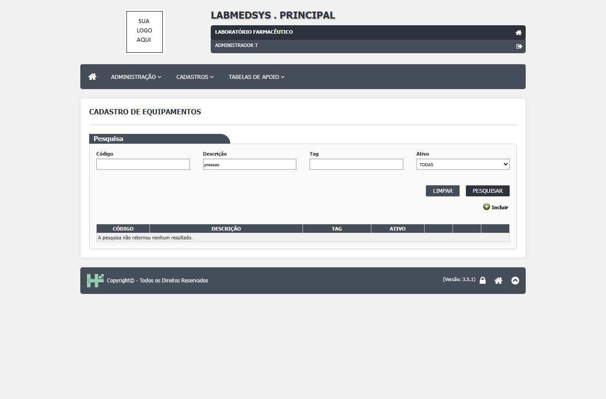
Figura 2: Equipamentos: "pressao" sem acento não encontra nada
Onde está no código
Causa (confirmada): o banco usa o padrão de ordenação Latin1_General_CI_AS: CI (ignora maiúsculas) mas AS (diferencia acentos). As consultas das listas comparam a descrição com LIKE sem mudar esse padrão, então "laboratorio" e "LABORATÓRIO" são textos diferentes. Existe no banco uma função TIRA_ACENTO, mas ela só troca o padrão para outro que também diferencia acentos (..._CS_AS) e não é usada nessas pesquisas. As listas chamam retornaListaAmbiente e retornaListaEquipamento (camada de dados) e a consulta equivalente de Pessoa jurídica em dalPJ.cs.
| Arquivo | Linhas | O que faz |
|---|---|---|
Hsolutions.Principal.DB/Hsolutions.Principal.DB.sqlproj |
31 | Padrão do banco Latin1_General_CI_AS (diferencia acentos). |
Hsolutions.Principal.DB/Functions/TIRA_ACENTO.sql |
9 | Função com nome enganoso: aplica um padrão que também diferencia acentos; não remove acento. |
LaboSys_UI/administrativas/ambiente_lst.aspx.cs |
37 | A pesquisa da tela chama retornaListaAmbiente (dalAmbiente.cs) com o texto digitado. |
LaboSys_UI/administrativas/equipamento_lst.aspx.cs |
39 | A pesquisa da tela chama retornaListaEquipamento (dalEquipamento.cs). |
Caminhos a partir da pasta app/ do módulo (1.principal/app).
Sugestão de correção
- Nas consultas das pesquisas, comparar com um padrão que ignore acentos, por exemplo
DESCRICAO COLLATE Latin1_General_CI_AI LIKE .... - Ou corrigir a função
TIRA_ACENTOpara usar um padrão_AIe aplicá-la dos dois lados da comparação. - Fazer a correção num ponto comum para valer em todas as pesquisas do sistema (Ambiente, Equipamento, Pessoa jurídica e os demais cadastros), e não tela por tela.
- Conferir que a pesquisa por CNPJ e por código continua igual.
Como confirmar a correção
Repetir o CT-PRI-096 nos três cadastros: pesquisar laboratorio, pressao e farmaceutica sem acento e conferir que os registros aparecem; repetir com acento e com caixa mista, que já funcionavam.
Observações
Na Pessoa jurídica, a pesquisa "farmaceutica" trouxe só as empresas gravadas sem acento; a TESTE com FARMACÊUTICA não apareceu (captura CT-PRI-096-pj-passo-1.png, não anexada por mostrar CNPJs de empresas).
DV-PRI-016
A contagem de tentativas restantes no login está errada: o usuário é bloqueado um erro antes do que a tela anuncia
| Gravidade | Situação | Tela | Caso de teste | Encontrado em | Norma afetada |
|---|---|---|---|---|---|
| Baixa | Aberto | Principal › Tela de login | CT-PRI-008 | 05/10/2026 (rodada 2) | Guia 33/2020, 9.3.2.3 (mensagens de erro inequívocas) |
Tipo: acesso/segurança · Já estava no portal: não
O que acontece
Nos quatro primeiros erros de senha, a tela avisa "mais 4, 3, 2 e 1 tentativa(s)", mas o usuário é bloqueado no 4º erro: na 4ª mensagem ainda diz "mais 1 tentativa" e a quinta tentativa, mesmo com a senha certa, é recusada ("O usuário informado foi bloqueado devido o limite de tentativas de acesso ao sistema!"). Risco: baixo, mas o usuário é pego de surpresa e a informação da tela não bate com a regra real.
Como reproduzir
- Abrir a tela de login do Principal.
- Com o login de um usuário de teste ativo, errar a senha quatro vezes seguidas, anotando cada mensagem.
- Na quinta tentativa, usar a senha correta.
Dados de teste usados: usuário de teste dedicado ao bloqueio; foi desbloqueado depois pelo Reset de senha.
Esperado e obtido
| Esperado | Obtido |
|---|---|
| Mensagens com a contagem correta de tentativas restantes (3, 2, 1 e 0 na última), e o bloqueio acontecendo quando a contagem chega a zero. | Mensagens com 4, 3, 2 e 1; bloqueio no 4º erro; a senha correta na 5ª tentativa é recusada. |
Evidências
Capturas guardadas só na pasta da rodada (não embutidas aqui por mostrarem nomes de usuário ou dados de acesso):
execucao/2026-10-05-rodada-2/evidencias/CT-PRI-008-passo-1.png: Primeira mensagem de erro (mais 4 tentativas).execucao/2026-10-05-rodada-2/evidencias/CT-PRI-008-passo-5.png: Usuário bloqueado na quinta tentativa.
Onde está no código
Causa (confirmada): a mensagem usa 4 menos o contador lido antes de registrar o erro atual, enquanto o bloqueio ocorre quando o contador chega a 4.
| Arquivo | Linhas | O que faz |
|---|---|---|
LaboSys_BLL/bllUsuario.cs |
149 | numTentativa = 4 - contadorAcesso (contador lido antes de contar o erro atual). |
LaboSys_BLL/bllUsuario.cs |
181 | limiteAcesso é verdadeiro quando CONTADOR_ACESSO >= 4 (bloqueio no 4º erro). |
Caminhos a partir da pasta app/ do módulo (1.principal/app).
Sugestão de correção
- Calcular as tentativas restantes depois de contar o erro atual (limite menos contador atualizado).
- Conferir o texto de cada mensagem até o bloqueio e a mensagem final.
Como confirmar a correção
Repetir o CT-PRI-008: mensagens com 3, 2, 1 e 0 tentativas, e bloqueio no momento anunciado.
Observações
Origem: SEG-PRI-12.
DV-PRI-018
Na tela inicial, o link do módulo Patrimônio aponta para o próprio servidor e não abre para o usuário
| Gravidade | Situação | Tela | Caso de teste | Encontrado em | Norma afetada |
|---|---|---|---|---|---|
| Baixa | Aberto | Principal › Tela inicial (lista de módulos) › Patrimônio | achado ao abrir os módulos (seção 6.2 do plano) | 05/10/2026 (rodada 2) | — |
Tipo: ambiente/dados · Já estava no portal: sim
O que acontece
Na tela inicial, ao clicar no módulo Patrimônio, o navegador tenta abrir um endereço localhost (o próprio computador do usuário) e a conexão é recusada. Todos os outros módulos habilitados (Produção, Estoque, Controle da Qualidade, Comercial, Controle de Documentos, Configurador OPE, Garantia da Qualidade e Rastreabilidade) abrem normalmente.
Como reproduzir
- Entrar no módulo Principal com um usuário que tenha acesso aos módulos.
- Na tela inicial, clicar no ícone do módulo Patrimônio.
Dados de teste usados: usuário administrador do ambiente de teste; nenhum dado criado.
Esperado e obtido
| Esperado | Obtido |
|---|---|
| Abrir o módulo Patrimônio, como os demais; ou, se o módulo não fizer parte do sistema entregue, não mostrar o ícone. | O navegador tenta abrir um endereço localhost e mostra conexão recusada. |
| ### Onde está no código |
Causa (provável): os links dos módulos vêm da tabela SIS_MODULO, coluna LINK. O script de carga do banco grava todos os módulos com endereço localhost; no ambiente de teste os outros módulos foram ajustados, mas a linha do Patrimônio ficou com o valor original e com HABILITADO = 1. A montagem da lista de módulos fica numa biblioteca compartilhada (fora de 1.principal/app), não conferida. Investigar: o valor de SIS_MODULO.LINK para CHAVE = 'PATRIMONIO' no banco de teste (pedir ao DBA).
| Arquivo | Linhas | O que faz |
|---|---|---|
Hsolutions.Principal.DB/dml.sql |
10321 | Carga inicial do módulo PATRIMONIO em SIS_MODULO, habilitado e com link localhost (os demais módulos também nascem assim e precisam ser ajustados na instalação). |
Caminhos a partir da pasta app/ do módulo (1.principal/app).
Sugestão de correção
- Confirmar se o módulo Patrimônio faz parte do sistema. Ponto para validar: entre as pastas entregues não há aplicação web do Patrimônio, só bibliotecas em
10.HSolution.Library. - Se não fizer parte: gravar
HABILITADO = 0para o Patrimônio, para o ícone sumir. - Se fizer: corrigir o
LINKno ambiente com o endereço publicado. - Incluir no roteiro de instalação a conferência dos links de todos os módulos e não usar
localhostno script de carga.
Como confirmar a correção
Entrar no Principal, clicar em cada módulo da tela inicial e conferir que todos abrem; o Patrimônio deve abrir ou não aparecer.
DV-PRI-021
A troca de senha compara senhas sem diferenciar maiúsculas de minúsculas
| Gravidade | Situação | Tela | Caso de teste | Encontrado em | Norma afetada |
|---|---|---|---|---|---|
| Baixa | Aberto | Principal › Troca de senha | CT-PRI-034 | 05/10/2026 (rodada 2) | Guia 33/2020, 7.3.1 (gestão de senhas) |
Tipo: acesso/segurança · Já estava no portal: não
O que acontece
Na troca de senha, o sistema trata Teste@2026a e TESTE@2026A como a mesma senha. Por isso: (1) trocar a senha atual por uma que só muda a caixa das letras é recusado ("Nova senha e senha anterior não devem ser iguais!"); (2) a confirmação digitada com caixa diferente da nova senha é aceita. Risco: baixo, mas a senha fica menos confiável (o usuário pode gravar uma senha diferente da que confirmou e depois não conseguir entrar) e o sistema recusa trocas legítimas.
Como reproduzir
- Entrar com um usuário de teste cuja senha atual seja
Teste@2026ae abrir a Troca de senha. - Passo 1: informar a senha atual, a nova senha
TESTE@2026Ae a confirmação igual; confirmar. - Passo 2: em outra troca, informar a nova senha e a confirmação com caixa diferente; confirmar.
Dados de teste usados: usuário de teste com senha trocada várias vezes; a senha foi descartada ao fim.
Esperado e obtido
| Esperado | Obtido |
|---|---|
| Passo 1: aceita (as senhas são diferentes). Passo 2: recusada (confirmação diferente da nova senha). | Passo 1 recusado com "Nova senha e senha anterior não devem ser iguais!"; passo 2 aceito. |
Evidências
Capturas guardadas só na pasta da rodada (não embutidas aqui por mostrarem nomes de usuário ou dados de acesso):
execucao/2026-10-05-rodada-2/evidencias/CT-PRI-034-passo-1.png: Troca recusada por diferir só na caixa.execucao/2026-10-05-rodada-2/evidencias/CT-PRI-034-passo-2.png: Confirmação com caixa diferente aceita.
Onde está no código
Causa (confirmada): a tela converte as senhas para maiúsculas antes de comparar a nova senha com a confirmação e com a senha atual.
| Arquivo | Linhas | O que faz |
|---|---|---|
LaboSys_UI/trocaSenha.aspx.cs |
97-109 | Compara ToUpper() da nova senha com a confirmação e com a atual. |
Caminhos a partir da pasta app/ do módulo (1.principal/app).
Sugestão de correção
- Comparar as senhas exatamente como digitadas (diferenciando maiúsculas de minúsculas).
- Conferir que o login e a validação da senha na entrada também diferenciam a caixa (ponto a conferir).
Como confirmar a correção
Repetir o CT-PRI-034: o passo 1 é aceito e o passo 2 recusado.
Observações
Origem: SEG-PRI-11. O limite de 14 caracteres que o código sugeria não se confirmou: uma senha de 40 foi aceita (embora a tela diga 8 a 14).
DV-PRI-012
Equipamento recém-criado não podia ser excluído (aberto por engano; explicado pela regra do item vinculado na própria tela)
| Gravidade | Situação | Tela | Caso de teste | Encontrado em | Norma afetada |
|---|---|---|---|---|---|
| Média | Descartado | Principal › Cadastros › Cadastro de Equipamentos › Excluir | CT-PRI-094 (Equipamento) | 05/10/2026 (rodada 1; encerrado no reteste da rodada 2) | Usabilidade (a recusa genérica segue no DV-PRI-011) |
Tipo: funcional · Já estava no portal: não
O que acontece
Um equipamento recém-criado, sem uso conhecido, recebeu na exclusão a frase "Exclusão inválida, existem referências com outras tabelas." e não pôde ser excluído. No reteste da rodada 2 viu-se o motivo: o equipamento tinha o tipo de manutenção "Manutenção preventiva" marcado na própria tela (vem marcado a partir da categoria). Removido o item vinculado, com justificativa, a exclusão funcionou ("Exclusão realizada com sucesso!"). O comportamento é a regra RN-PRI-071 (item vinculado na própria tela impede a exclusão até ser removido). Este registro foi encerrado: não é defeito do sistema. O que sobra é a recusa com mensagem genérica, que não diz qual item impede, tratado no DV-PRI-011.
Como reproduzir
- Em Cadastros › Cadastro de Equipamentos, incluir um equipamento com Categoria e tentar excluí-lo pela lista: aparece a recusa genérica.
- Abrir o equipamento e conferir os itens vinculados na própria tela (tipos de manutenção).
- Remover o item vinculado com justificativa e repetir a exclusão.
Dados de teste usados: equipamento de teste (categoria de teste), excluído no reteste da rodada 2.
Esperado e obtido
| Esperado | Obtido |
|---|---|
| Exclusão liberada depois de removido o item vinculado, com a mensagem dizendo qual item impede (esta parte está no DV-PRI-011). | A exclusão funcionou depois de remover o tipo de manutenção; a mensagem de recusa continua genérica. |
Evidências
- Captura guardada na pasta da rodada:
execucao/2026-10-05-rodada-2/evidencias/DV-PRI-012-passo-1.png, Itens vinculados na própria tela do equipamento (tipo de manutenção marcado).
Sugestão de correção
- Nada a corrigir neste registro; a mensagem genérica é tratada no DV-PRI-011.
Observações
Encerrado em 06/10/2026 por explicação pela RN-PRI-071. Não entra na contagem de defeitos em aberto.